14 Rethinking: Chapter 13
Models with Memory
by Richard McElreath, building on the Summaries by Solomon Kurz and Erik Kusch.
Advantages of multilevel models:
- Improved estimates for repeated sampling
- Improved estimates for imbalanced sampling
- Estimates of variation
- Avoid averaging, retain variation
When it comes to regression, multilevel regression deserves to be the default approach. There are certainly contexts in which it would be better to use an old-fashioned single-level model. But the contexts in which multilevel models are superior are much more numerous. Better to begin to build a multilevel analysis and then realize it’s unnecessary, than to overlook it.
The most common synonyms for ‘multilevel’ are hierarchical and mixed effects. The type of parameters that appear in multilevel models are most commonly known as random effects, which itself can mean very different things to different analysts and in different contexts.
14.1 Multilevel tadpoles
library(rethinking)
data(reedfrogs)
data_frogs <- reedfrogs %>%
as_tibble() %>%
mutate(tank = row_number())
rm(reedfrogs)Old fashioned Single-level model:
\[ \begin{array}{rcllr} S_{i} & \sim & Binomial(N_{i}, p_{i}) & & \textrm{[likelihood]}\\ \textrm{logit}(p_{i}) & = & \alpha_{TANK[i]} & & \textrm{[unique log-odds for each tank]}\\ \alpha_{j} & \sim & Normal(0, 1.5) & \textrm{for}~j = 1..48 & \textrm{[$\alpha$ prior]}\\ \end{array} \]
data_frogs_list_1 <- data_frogs %>%
dplyr::select(surv, density, tank) %>%
as.list()
model_frog_single <- ulam(
flist = alist(
surv ~ dbinom( density, p ),
logit(p) <- alpha[tank],
alpha[tank] ~ dnorm(0, 1.5)
),
data = data_frogs,
cores = 4,
chains = 4,
log_lik = TRUE
)# not executed because to verbose
precis(model_frog_single, depth = 2) %>%
knit_precis()Update to multilevel model:
\[ \begin{array}{rclr} S_{i} & \sim & Binomial(N_{i}, p_{i}) & \textrm{[likelihood]}\\ \textrm{logit}(p_{i}) & = & \alpha_{TANK[i]} & \textrm{[unique log-odds for each tank]}\\ \alpha_{j} & \sim & Normal(\color{#B35136}{\bar{\alpha}}, \color{#B35136}{\sigma}) & \textrm{[adaptive prior]}\\ \color{#B35136}{\bar{\alpha}} & \sim & \color{#B35136}{Normal(0, 1.5)} &\textrm{[prior for average tank]}\\ \color{#B35136}{\sigma} & \sim & \color{#B35136}{Exponential(1)} & \textrm{[prior for standard deviation of tanks]}\\ \end{array} \] The parameters \(\bar{\alpha}\) and \(\sigma\) represent hyperparameters which define the second level of the multilevel model. They come with hyperpriors.
model_frog_multi <- ulam(
flist = alist(
surv ~ dbinom( density, p ),
logit(p) <- alpha[tank],
alpha[tank] ~ dnorm(alpha_bar, sigma),
alpha_bar ~ dnorm(0, 1.5),
sigma ~ dexp(1)
),
data = data_frogs,
cores = 4,
chains = 4,
log_lik = TRUE
)compare(model_frog_single,
model_frog_multi) %>%
knit_precis(param_name = "model")| model | WAIC | SE | dWAIC | dSE | pWAIC | weight |
|---|---|---|---|---|---|---|
| model_frog_multi | 201.75 | 7.38 | 0.00 | NA | 21.68 | 1 |
| model_frog_single | 214.91 | 4.41 | 13.16 | 3.97 | 25.71 | 0 |
🤓 There are only 21 effective parameters (pWAIC) in the multilevel model, despite the 48 different tanks.
This is because we used a regularizing prior that shrinks the alpha intercepts towards the mean \(\bar{\alpha}\).
frogs_posterior <- extract.samples(model_frog_multi) %>%
as.data.frame() %>%
as_tibble() %>%
pivot_longer(everything(), names_to = "param") %>%
filter(!(param %in% c("alpha_bar", "sigma"))) %>%
group_by(param) %>%
summarize(posterior = list(tibble(value = c(quantile(value,
probs = c(.055, .25, .5, .75,.945)),
mean(value)),
label = c("ll", "l", "m", "h", "hh", "mean")))) %>%
ungroup() %>%
unnest(posterior) %>%
mutate(value = logistic(value)) %>%
pivot_wider(names_from = label, values_from = value ) %>%
mutate(tank = str_remove( param, "alpha.") %>% as.integer()) %>%
arrange(tank) %>%
left_join(data_frogs, .)
posterior_median <- extract.samples(model_frog_multi) %>%
as.data.frame() %>%
as_tibble() %>%
pivot_longer(everything(), names_to = "param") %>%
summarize(median = median(value)) %>%
.$median %>%
logistic()
frogs_posterior %>%
ggplot(aes(x = tank, color = factor(density))) +
geom_hline(yintercept = posterior_median, color = clr_dark, linetype = 3) +
geom_linerange(aes(ymin = ll, ymax = hh), size = .2)+
geom_linerange(aes(ymin = l, ymax = h), size = .75) +
geom_point(aes(y = m, fill = after_scale(clr_lighten(color))), shape = 21) +
geom_point(aes(y = propsurv), shape = 1, size = 2) +
facet_wrap(density ~ ., scale = "free_x", labeller = label_both) +
scale_color_manual(values = c(clr0d, clr_dark, clr_current), guide = "none") +
labs(y = 'survival_prop') +
theme(panel.border = element_rect(color = clr0d, fill = "transparent"))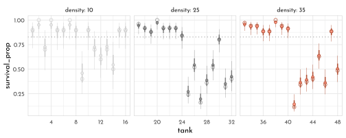
The mean posterior is always closer to the estimated median survival proportion of the population than the raw data. This is an effect called shrinkage, resulting from the regularizing priors as an effect of pooling information across clusters.
The inferred population distribution of survival:
frogs_hyperposterior <- extract.samples(model_frog_multi) %>%
as.data.frame() %>%
as_tibble() %>%
dplyr::select(alpha_bar, sigma)
p1 <- ggplot() +
pmap(frogs_hyperposterior %>% filter(row_number() < 100),
function(alpha_bar, sigma){
stat_function(fun = dnorm,
args = list(mean = alpha_bar, sd = sigma),
xlim = c(-3, 4),
geom = "line",
color = clr0dd, alpha = .4)
}) +
labs(y = "density",
x = "log-odds survival",
subtitle = "population distribution of survival")
sim_taks <- tibble(logit_p = rnorm(8000,
mean = frogs_hyperposterior$alpha_bar,
sd = frogs_hyperposterior$sigma),
p = inv_logit(logit_p))
p2 <- sim_taks %>%
ggplot(aes(x = p)) +
geom_density(adjust = .1, color = clr0d, fill = fll0) +
labs(subtitle = "variation of survival in population of tanks")
p1 + p2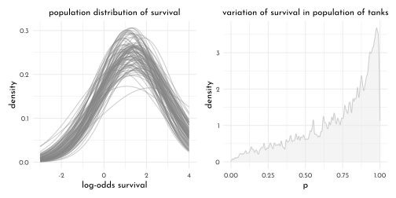
There can be certain issues with the weakly regularizing priors for the variance components (\(\sigma\)) in multilevel models:
- if there only few clusters (e.g. ~ 5), estimating the variance is difficult and a more informative prior might be necessary
- the edge-effects of \(log\) and \(logit\) link functions can lead to ineffective sampling (lots of divergent transitions and small
n_eff- visible as swings in the trace plot for \(\sigma\)). Using a distribution with less mass in the tail compared to the \(exponential\) can help here:
\[
\begin{array}{rclr}
S_{i} & \sim & Binomial(N_{i}, p_{i}) & \textrm{[likelihood]}\\
\textrm{logit}(p_{i}) & = & \alpha_{TANK[i]} & \textrm{[linear model]}\\
\alpha_{j} & \sim & Normal(\bar{\alpha}, \sigma) & \textrm{[}~\alpha~\textrm{prior]}\\
\bar{\alpha} & \sim & Normal(0, 1.5) & \textrm{[}~\bar{\alpha}~\textrm{prior]}\\
\sigma & \sim & Half\textrm{-}Normal(0, 1) & \textrm{[}~\sigma~\textrm{prior]}\\
\end{array}
\]
Use dhalfnorm() in {rethinking} and lower = 0 in regular Stan.
14.2 Varying Effects and the Underfitting/Overfitting Tade-Off
Simulating data from a multilevel model to compare the estimates from a no-pooling, complete pooling and partial-pooling modeling approach.
The Model
\[ \begin{array}{rclr} S_{i} & \sim & Binomial(N_{i}, p_{i}) & \textrm{[likelihood]}\\ \textrm{logit}(p_{i}) & = & \alpha_{\color{#B35136}{POND[i]}} & \textrm{[linear model]}\\ \alpha_{j} & \sim & Normal(\bar{\alpha}, \sigma) & \textrm{[}~\alpha~\textrm{prior]}\\ \bar{\alpha} & \sim & Normal(0, 1.5) & \textrm{[}~\bar{\alpha}~\textrm{prior]}\\ \sigma & \sim & Half\textrm{-}Normal(0, 1) & \textrm{[}~\sigma~\textrm{prior]}\\ \end{array} \] Assigning values to the parameters and simulating the non-pooled estimates.
set.seed(42)
alpha_bar <- 1.5
sigma <- 1.5
n_ponds <- 60
pond_levels <- c("tiny", "small", "medium", "large")
data_sim <- tibble(pond_idx = 1:n_ponds,
n_i = rep(c(5, 10, 25, 35), each = 15),
pond_size = rep(pond_levels, each = 15) %>%
factor(levels = pond_levels),
true_alpha = rnorm(n = n_ponds, mean = alpha_bar, sd = sigma),
surv_i = rbinom(n_ponds, prob = logistic(true_alpha), size = n_i),
p_true = inv_logit(true_alpha),
p_no_pool = surv_i / n_i)Where true_alpha is the true log-odds survival for each pond, surv_i are the simulated survivors and p_no_pool is the non-pooling estimate of survival.
Remember that we used the logit link, so the probability is defined by the logistic function (\(p_i = \frac{exp(\alpha_i)}{1 - exp(\alpha_{i})}\))
Computing the partial-pooling estimates.
data_sim_list <- data_sim %>%
dplyr::select(surv_i, n_i, pond_idx)
model_sim_partial <- ulam(
flist = alist(
surv_i ~ dbinom(n_i, p),
logit(p) <- alpha_pond[pond_idx],
alpha_pond[pond_idx] ~ dnorm(alpha_bar, sigma),
alpha_bar ~ dnorm(0, 1.5),
sigma ~ dexp( 1 )
),
data = data_sim_list,
cores = 4,
chains = 4,
log_lik = TRUE
)precis(model_sim_partial, depth = 2) %>%
tail() %>%
knit_precis()| param | mean | sd | 5.5% | 94.5% | n_eff | Rhat4 |
|---|---|---|---|---|---|---|
| alpha_pond[57] | 2.09 | 0.52 | 1.31 | 2.98 | 2382.97 | 1 |
| alpha_pond[58] | 1.61 | 0.43 | 0.95 | 2.33 | 4025.40 | 1 |
| alpha_pond[59] | -2.04 | 0.52 | -2.91 | -1.26 | 2461.46 | 1 |
| alpha_pond[60] | 1.60 | 0.44 | 0.93 | 2.33 | 3172.11 | 1 |
| alpha_bar | 1.36 | 0.23 | 0.99 | 1.74 | 2211.66 | 1 |
| sigma | 1.58 | 0.21 | 1.26 | 1.95 | 1026.87 | 1 |
sim_posterior <- extract.samples(model_sim_partial) %>%
as.data.frame() %>%
as_tibble() %>%
pivot_longer(everything(), names_to = "param") %>%
filter(!(param %in% c("alpha_bar", "sigma"))) %>%
group_by(param) %>%
summarize(posterior = list(tibble(value = c(quantile(value,
probs = c(.055, .25, .5, .75,.945)),
mean(value)),
label = c("ll", "l", "m", "h", "hh", "mean")))) %>%
ungroup() %>%
unnest(posterior) %>%
mutate(value = logistic(value)) %>%
pivot_wider(names_from = label, values_from = value ) %>%
mutate(pond_idx = str_remove( param, "alpha_pond.") %>% as.integer()) %>%
arrange(pond_idx) %>%
left_join(data_sim, .) %>%
mutate(error_no_pool = abs(p_no_pool - p_true),
error_part_pool = abs(m - p_true))
error_means <- sim_posterior %>%
dplyr::select(pond_size, starts_with("error")) %>%
pivot_longer(starts_with("error"), names_to = "model") %>%
group_by(pond_size, model) %>%
summarise(mean = mean(value)) %>%
ungroup() %>%
mutate(model = str_remove(model, "error_"))
sim_posterior %>%
dplyr::select(pond_idx, pond_size, starts_with("error")) %>%
pivot_longer(starts_with("error"), names_to = "model") %>%
mutate(model = str_remove(model, "error_")) %>%
ggplot(aes(x = pond_idx, color = model)) +
geom_hline(data = error_means,
aes(yintercept = mean, color = model),linetype = 3) +
geom_point(aes(y = value, fill = after_scale(clr_lighten(color))), shape = 21) +
facet_wrap(pond_size ~ ., scale = "free_x", labeller = label_both, nrow = 1) +
scale_color_manual(values = c(clr0dd,clr_current), guide = "none") +
labs(y = 'absolute error') +
theme(panel.border = element_rect(color = clr0d, fill = "transparent"))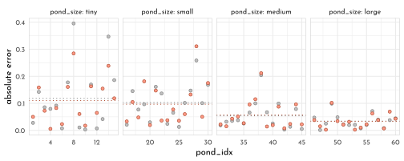
14.3 More than One Type of Cluster
\[ \begin{array}{rclr} L_{i} & \sim & Binomial(1, p_{i}) & \textrm{[likelihood]}\\ \textrm{logit}(p_{i}) & = & \alpha_{ACTOR[i]} + \color{#B35136}{\gamma_{BLOCK[i]}} + \beta_{TREATMENT[i]} & \textrm{[linear model]}\\ \beta_{j} & \sim & Normal(0, 0.5) ~~ , \textrm{for}~j= 1..4 & \textrm{[}~\beta~\textrm{prior]}\\ \alpha_{j} & \sim & Normal(\bar{\alpha}, \sigma_{\alpha}) ~~ , \textrm{for}~j= 1..7 & \textrm{[}~\alpha~\textrm{prior]} \\ \color{#B35136}{\gamma_{j}} & \sim & \color{#B35136}{Normal(0, \sigma_{\gamma}) ~~ , \textrm{for}~j= 1..6} & \textrm{[}~\gamma~\textrm{prior]} \\ \bar{\alpha} & \sim & Normal(0, 1.5) & \textrm{[}~\bar{\alpha}~\textrm{prior]} \\ \sigma_{\alpha} & \sim & Exponential(1) & \textrm{[}~\sigma_{\alpha}~\textrm{prior]} \\ \color{#B35136}{\sigma_{\gamma}} & \sim & \color{#B35136}{Exponential(1)} & \textrm{[}~\sigma_{\gamma}~\textrm{prior]} \end{array} \]
data(chimpanzees)
data_chimp <- chimpanzees %>%
as_tibble() %>%
mutate(treatment = 1L + prosoc_left + 2L * condition,
side_idx = prosoc_left + 1L, # right 1, left 2
condition_idx = condition + 1L) # no partner 1, partner 2
rm(chimpanzees)data_chimp_list <- data_chimp %>%
dplyr::select(pulled_left, actor, block, treatment) %>%
as.list()
model_chimp_multicluster <- ulam(
flist = alist(
pulled_left ~ dbinom( 1, p ),
logit(p) <- alpha[actor] + gamma[block] + beta[treatment],
beta[treatment] ~ dnorm(0,.5),
## adaptive priors
alpha[actor] ~ dnorm( alpha_bar, sigma_alpha ),
gamma[block] ~ dnorm( 0, sigma_gamma ),
## hyper-priors
alpha_bar ~ dnorm( 0, 1.5 ),
sigma_alpha ~ dexp(1),
sigma_gamma ~ dexp(1)
),
data = data_chimp_list,
cores = 4,
chains = 4,
log_lik = TRUE
)precis(model_chimp_multicluster, depth = 2) %>%
knit_precis()| param | mean | sd | 5.5% | 94.5% | n_eff | Rhat4 |
|---|---|---|---|---|---|---|
| beta[1] | -0.13 | 0.29 | -0.61 | 0.32 | 239.03 | 1.02 |
| beta[2] | 0.36 | 0.29 | -0.12 | 0.81 | 373.42 | 1.03 |
| beta[3] | -0.50 | 0.29 | -0.99 | -0.06 | 435.05 | 1.02 |
| beta[4] | 0.26 | 0.28 | -0.22 | 0.72 | 453.49 | 1.02 |
| alpha[1] | -0.31 | 0.35 | -0.89 | 0.21 | 374.70 | 1.02 |
| alpha[2] | 4.86 | 1.25 | 3.11 | 6.90 | 270.93 | 1.03 |
| alpha[3] | -0.59 | 0.37 | -1.21 | -0.05 | 73.39 | 1.05 |
| alpha[4] | -0.64 | 0.34 | -1.17 | -0.07 | 502.17 | 1.01 |
| alpha[5] | -0.34 | 0.34 | -0.89 | 0.22 | 519.78 | 1.01 |
| alpha[6] | 0.57 | 0.36 | 0.07 | 1.18 | 163.07 | 1.03 |
| alpha[7] | 2.13 | 0.43 | 1.45 | 2.84 | 642.20 | 1.01 |
| gamma[1] | -0.15 | 0.22 | -0.56 | 0.06 | 149.78 | 1.03 |
| gamma[2] | 0.03 | 0.17 | -0.23 | 0.33 | 1100.80 | 1.00 |
| gamma[3] | 0.04 | 0.18 | -0.21 | 0.35 | 942.22 | 1.01 |
| gamma[4] | 0.01 | 0.17 | -0.27 | 0.30 | 991.59 | 1.00 |
| gamma[5] | -0.03 | 0.18 | -0.33 | 0.22 | 1106.90 | 1.01 |
| gamma[6] | 0.10 | 0.18 | -0.12 | 0.44 | 400.37 | 1.02 |
| alpha_bar | 0.77 | 0.84 | -0.50 | 2.23 | 30.19 | 1.09 |
| sigma_alpha | 2.05 | 0.65 | 1.22 | 3.28 | 943.63 | 1.00 |
| sigma_gamma | 0.19 | 0.17 | 0.01 | 0.50 | 84.28 | 1.05 |
p1 <- precis(model_chimp_multicluster, depth = 2) %>%
data.frame() %>%
rownames_to_column() %>%
as_tibble() %>%
ggplot(aes(y = rowname)) +
geom_vline(xintercept = 0, color = clr_dark, linetype = 3) +
geom_linerange(aes(xmin = `X5.5.`, xmax = `X94.5.`),
color = clr0dd) +
geom_point(aes(x = mean), shape = 21,
color = clr0dd, fill = clr0) +
labs(y = "param",
x = "posterior (mean and 89 percentile)")
p2 <- extract.samples(model_chimp_multicluster) %>%
as_tibble() %>%
dplyr::select(sigma_alpha, sigma_gamma) %>%
pivot_longer(everything(),
names_sep = "_",
names_to = c("prefix", "param")) %>%
ggplot(aes(x = value, color = param)) +
geom_density(adjust = .5, aes(fill = after_scale(clr_alpha(color)))) +
scale_color_manual(values = c(clr0dd, clr_current)) +
theme(legend.position = c(1,1),
legend.justification = c(1,1))
p1 + p2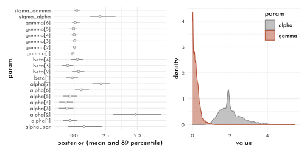
model_chimp_singlecluster <- ulam(
flist = alist(
pulled_left ~ dbinom( 1, p ),
logit(p) <- alpha[actor] + beta[treatment],
beta[treatment] ~ dnorm(0,.5),
## adaptive priors
alpha[actor] ~ dnorm( alpha_bar, sigma_alpha ),
## hyper-priors
alpha_bar ~ dnorm( 0, 1.5 ),
sigma_alpha ~ dexp(1)
),
data = data_chimp_list,
cores = 4,
chains = 4,
log_lik = TRUE
)compare(model_chimp_singlecluster,
model_chimp_multicluster) %>%
knit_precis(param_name = "model")| model | WAIC | SE | dWAIC | dSE | pWAIC | weight |
|---|---|---|---|---|---|---|
| model_chimp_singlecluster | 530.68 | 19.18 | 0.00 | NA | 8.35 | 0.63 |
| model_chimp_multicluster | 531.72 | 19.11 | 1.04 | 1.58 | 10.31 | 0.37 |
Even more clusters (partial pooling on the treatment)
model_chimp_treatment <- ulam(
flist = alist(
pulled_left ~ dbinom( 1, p ),
logit(p) <- alpha[actor] + gamma[block] + beta[treatment],
## adaptive priors
beta[treatment] ~ dnorm(0, sigma_beta),
alpha[actor] ~ dnorm( alpha_bar, sigma_alpha ),
gamma[block] ~ dnorm( 0, sigma_gamma ),
## hyper-priors
alpha_bar ~ dnorm( 0, 1.5 ),
sigma_beta ~ dexp(1),
sigma_alpha ~ dexp(1),
sigma_gamma ~ dexp(1)
),
data = data_chimp_list,
cores = 4,
chains = 4,
log_lik = TRUE
)library(ggdist)
extract.samples(model_chimp_treatment) %>%
as_tibble() %>%
dplyr::select(starts_with("sigma")) %>%
pivot_longer(everything(),
names_sep = "_",
names_to = c("prefix", "sigma")) %>%
ggplot(aes(x = value, y = sigma, color = sigma)) +
stat_slab(adjust = .75, size = .5, normalize = "xy",
aes(fill = after_scale(clr_alpha(color)))) +
scale_color_manual(values = c(clr0dd, clr_dark, clr_current),
guide = "none") +
coord_cartesian(ylim = c(.95, 4.1), expand = 0) +
theme(legend.position = c(1,1),
legend.justification = c(1,1))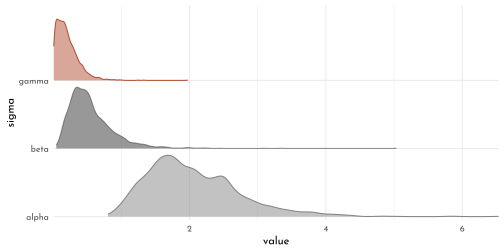
coeftab(model_chimp_multicluster,
model_chimp_treatment)@coefs %>%
as.data.frame() %>%
head() %>%
knit_precis()| param | model_chimp_multicluster | model_chimp_treatment |
|---|---|---|
| beta[1] | -0.13 | -0.11 |
| beta[2] | 0.36 | 0.37 |
| beta[3] | -0.50 | -0.44 |
| beta[4] | 0.26 | 0.26 |
| alpha[1] | -0.31 | -0.36 |
| alpha[2] | 4.86 | 4.74 |
14.4 Divergent Transitions and Non-Centered Priors
Divergent transitions arise from steep gradients within the posterior that leads to issues in the exploration on the basis of a discretized physical simulation. It can help to reparameterizethe model - that is re-writing the model in a equivalent notation that allows an alternative numerical approximation.
14.4.1 The Devil’s Funnel
Given the joint distribution of the two variable \(v\) and \(x\):
Model with centered parameterization (definition of \(x\) is conditional on another parameter).
\[ \begin{array}{rcl} v & \sim & Normal(0, 3)\\ x & \sim & Normal(0, \textrm{exp}(v)) \end{array} \]
model_devils_funnel_centered <- ulam(
flist = alist(
v ~ normal( 0, 3 ),
x ~ normal( 0, exp(v) )
),
data = list(N = 1),
chains = 4
)#> Warning: 78 of 2000 (4.0%) transitions ended with a divergence.
#> This may indicate insufficient exploration of the posterior distribution.
#> Possible remedies include:
#> * Increasing adapt_delta closer to 1 (default is 0.8)
#> * Reparameterizing the model (e.g. using a non-centered parameterization)
#> * Using informative or weakly informative prior distributions
#>
#> 14 of 2000 (1.0%) transitions hit the maximum treedepth limit of 10 or 2^10-1 leapfrog steps.
#> Trajectories that are prematurely terminated due to this limit will result in slow exploration.
#> Increasing the max_treedepth limit can avoid this at the expense of more computation.
#> If increasing max_treedepth does not remove warnings, try to reparameterize the model.precis(model_devils_funnel_centered) %>%
knit_precis()| param | mean | sd | 5.5% | 94.5% | n_eff | Rhat4 |
|---|---|---|---|---|---|---|
| v | 1.63 | 1.57 | -0.42 | 4.42 | 68.06 | 1.05 |
| x | 1.67 | 51.26 | -23.70 | 27.89 | 348.14 | 1.01 |
\(\rightarrow\) note the low n_eff (part of 2000 - 4 chains X 500 samples) and high Rhat4 😟`
# define the parameter space
parameter_space <- seq(from = -4, to = 4, length.out = 200)
# simulate
p1 <- crossing(v = parameter_space,
x = parameter_space) %>%
mutate(likelihood_v = dnorm(v, mean = 0, sd = 3),
likelihood_x = dnorm(x, mean = 0, sd = exp(v))) %>%
mutate(joint_likelihood = likelihood_v * likelihood_x) %>%
# plot!
ggplot(aes(x = x, y = v, color = joint_likelihood)) +
ggisoband::geom_isobands(aes(z = joint_likelihood,
fill = after_scale(clr_alpha(color,.1))),
bins = 51, size = .4) +
scale_color_gradientn(colours = c(clr0, clr_dark, clr_current)) +
# geom_raster(interpolate = TRUE) +
# scale_color_viridis_c(option = "B") +
labs(subtitle = "Centered parameterization") +
theme(legend.position = "none")The same model with a non-centered parameterization (the embedded parameter is moved out of the definition of \(x\)) - this is similar to standardizing a variable.
\[ \begin{array}{rcl} v & \sim & Normal(0, 3) \\ z & \sim & Normal(0, 1) \\ x & = & z~\textrm{exp}(v) \end{array} \]
p2 <- crossing(v = parameter_space,
z = parameter_space / 2) %>%
mutate(likelihood_v = dnorm(v, mean = 0, sd = 3),
likelihood_z = dnorm(z, mean = 0, sd = 1)) %>%
mutate(joint_likelihood = likelihood_v * likelihood_z) %>%
# plot!
ggplot(aes(x = z, y = v, color = joint_likelihood)) +
ggisoband::geom_isobands(aes(z = joint_likelihood,
fill = after_scale(clr_alpha(color,.1))),
bins = 15, size = .4) +
scale_color_gradientn(colours = c(clr0, clr_dark, clr_current)) +
# scale_fill_viridis_c(option = "B") +
labs(subtitle = "Non-centered parameterization") +
theme(legend.position = "none")
p1 + p2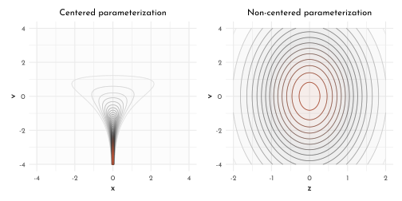
model_devils_funnel_non_centered <- ulam(
flist = alist(
v ~ normal( 0, 3 ),
z ~ normal( 0, 1),
gq> real[1]:x <<- z * exp(v)
),
data = list(N = 1),
chains = 4
)precis(model_devils_funnel_non_centered) %>%
knit_precis()| param | mean | sd | 5.5% | 94.5% | n_eff | Rhat4 |
|---|---|---|---|---|---|---|
| v | -0.01 | 3.00 | -4.88 | 4.59 | 1140.87 | 1 |
| z | 0.04 | 0.98 | -1.55 | 1.59 | 1412.03 | 1 |
| x | 14.83 | 414.92 | -21.11 | 33.61 | 1227.91 | 1 |
extract.samples(model_devils_funnel_non_centered) %>%
as.data.frame() %>%
as_tibble() %>%
ggplot(aes(x = x, y = v)) +
ggpointdensity::geom_pointdensity(size = .75)+
scale_color_gradientn(colours = c(clr0, clr_dark, clr_current),
guide = 'none') +
coord_cartesian(xlim = c(-4, 4),
ylim = c(-4, 4)) +
labs(subtitle = "posterior sampled with HMC")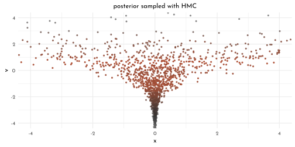
14.4.2 Non-Centered Chimpanzees
The quick and easy way to help with divergent transitions is to increase the stringency of acceptance by selecting an adapt_delta that is closer to 1:
set.seed(42)
model_chimp_multicluster_fine <- ulam(
model_chimp_multicluster,
chains = 4,
cores = 4,
control = list(adapt_delta = 0.99)
)divergent(model_chimp_multicluster)#> [1] 51divergent(model_chimp_multicluster_fine)#> [1] 0precis(model_chimp_multicluster_fine) %>%
knit_precis()| param | mean | sd | 5.5% | 94.5% | n_eff | Rhat4 |
|---|---|---|---|---|---|---|
| alpha_bar | 0.61 | 0.72 | -0.49 | 1.79 | 1053.49 | 1.00 |
| sigma_alpha | 2.03 | 0.67 | 1.19 | 3.23 | 852.96 | 1.00 |
| sigma_gamma | 0.22 | 0.17 | 0.03 | 0.52 | 211.50 | 1.02 |
This still produces bad (low n_eff) though.
The more serious approach is to re-parameterize the model. For the current model, we need to transform two adaptive priors to move their paramters into a linear model:
\[ \begin{array}{rclr} L_{i} & \sim & Binomial(1, p_{i}) & \textrm{[likelihood]}\\ \textrm{logit}(p_{i}) & = & \alpha_{ACTOR[i]} + \gamma_{BLOCK[i]} + \beta_{TREATMENT[i]} & \textrm{[linear model]}\\ \beta_{j} & \sim & Normal(0, 0.5) ~~ , \textrm{for}~j= 1..4 & \textrm{[}~\beta~\textrm{prior]}\\ \color{#B35136}{\alpha_{j}} & \sim & \color{#B35136}{Normal(\bar{\alpha}, \sigma_{\alpha}) ~~ , \textrm{for}~j= 1..7} & \textrm{[Intercepts for actors]} \\ \color{#B35136}{\gamma_{j}} & \sim & \color{#B35136}{Normal(0, \sigma_{\gamma}) ~~ , \textrm{for}~j= 1..6} & \textrm{[Intercepts for blocks]} \\ \bar{\alpha} & \sim & Normal(0, 1.5) & \textrm{[}~\bar{\alpha}~\textrm{prior]} \\ \sigma_{\alpha} & \sim & Exponential(1) & \textrm{[}~\sigma_{\alpha}~\textrm{prior]} \\ \sigma_{\gamma} & \sim & Exponential(1) & \textrm{[}~\sigma_{\gamma}~\textrm{prior]} \end{array} \]
Our task is to reconfigure remove three embedded parameters (\(\bar{\alpha}\), \(\sigma_{\alpha}\) and \(\sigma_{\gamma}\)). To do this we define new variables with \(Normal\) distributions. To reconstruct the original values by reversing the transformations.
The reparamterized model then reads
\[ \begin{array}{rclr} L_{i} & \sim & Binomial(1, p_{i}) & \textrm{[likelihood]}\\ \textrm{logit}(p_{i}) & = & \color{#B35136}{\underbrace{\bar{\alpha} + z_{ACTOR[i]} \sigma_{\alpha}}_{\alpha_{ACTOR[i]}}} + \color{#B35136}{\underbrace{x_{BLOCK[i]} \sigma_{\gamma}}_{\gamma_{BLOCK[i]}}}+ \beta_{TREATMENT[i]} & \textrm{[linear model]}\\ \beta_{j} & \sim & Normal(0, 0.5) ~~ , \textrm{for}~j= 1..4 & \textrm{[}~\beta~\textrm{prior]}\\ \color{#B35136}{z_{j}} & \sim & \color{#B35136}{Normal(0, 1)} & \textrm{[standardized actor intercepts]} \\ \color{#B35136}{x_{j}} & \sim & \color{#B35136}{Normal(0, 1)} & \textrm{[standardized block intercepts]} \\ \bar{\alpha} & \sim & Normal(0, 1.5) & \textrm{[}~\bar{\alpha}~\textrm{prior]} \\ \sigma_{\alpha} & \sim & Exponential(1) & \textrm{[}~\sigma_{\alpha}~\textrm{prior]} \\ \sigma_{\gamma} & \sim & Exponential(1) & \textrm{[}~\sigma_{\gamma}~\textrm{prior]} \end{array} \]
model_chimp_multicluster_reparam <- ulam(
flist = alist(
pulled_left ~ dbinom( 1, p ),
logit(p) <- alpha_bar + z[actor] * sigma_alpha +
x[block] * sigma_gamma +
beta[treatment],
beta[treatment] ~ dnorm(0,.5),
## adaptive priors
z[actor] ~ dnorm( 0, 1 ),
x[block] ~ dnorm( 0, 1 ),
## hyper-priors
alpha_bar ~ dnorm( 0, 1.5 ),
sigma_alpha ~ dexp(1),
sigma_gamma ~ dexp(1),
gq> vector[actor]:alpha <<- alpha_bar + z * sigma_alpha,
gq> vector[block]:gamma <<- x * sigma_gamma
),
data = data_chimp_list,
cores = 4,
chains = 4,
log_lik = TRUE
)get_n_eff <- function(model, model_lab){
precis(model, depth = 2) %>%
data.frame() %>%
rownames_to_column() %>%
as_tibble() %>%
dplyr::select(rowname, n_eff) %>%
set_names(nm = c("param", str_c("n_eff_", model_lab)))
}
get_n_eff(model_chimp_multicluster, "centered") %>%
left_join(get_n_eff(model_chimp_multicluster_reparam, "non-centered")) %>%
ggplot(aes(x = n_eff_centered, y = `n_eff_non-centered`)) +
geom_abline(slope = 1, intercept = 0, color = clr_dark, linetype = 3) +
geom_point(shape = 21, color = clr0dd, fill = clr0) +
coord_cartesian(xlim = c(0, 2250),
ylim = c(0, 2250))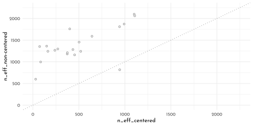
Reparameterization does not need to use a gaussian distribution. For example the an exponential distribution would look like this:
\[ \begin{array}{rcl} x & = & x\lambda\\ z & \sim & Exponential(1) \end{array} \]
which replaces \(x \sim Exponential(\lambda)\).
14.5 Multilevel Posterior Predictions
14.5.1 Posterior Prediction for Same Clusters
Using link() (quick approach):
chimp <- 2L
data_predict <- list(
actor = rep(chimp, 4),
treatment = 1:4,
block = rep(1L, 4)
)
link(model_chimp_multicluster, data = data_predict) %>%
as_tibble() %>%
set_names(nm = str_c("treatment", 1:4)) %>%
summarise(across(everything(),
function(x){list(tibble(mean = mean(x),
pi_lower = PI(x)[1],
pi_upper = PI(x)[2]))})) %>%
pivot_longer(everything()) %>%
unnest(value)#> # A tibble: 4 × 4
#> name mean pi_lower pi_upper
#> <chr> <dbl> <dbl> <dbl>
#> 1 treatment1 0.981 0.944 0.999
#> 2 treatment2 0.989 0.966 0.999
#> 3 treatment3 0.974 0.927 0.998
#> 4 treatment4 0.987 0.962 0.999Using extract.samples() (generic approach)
chimp_posterior <- extract.samples(model_chimp_multicluster) %>%
as.data.frame() %>%
as_tibble()
chimp_posterior %>%
ggplot(aes(x = alpha.5)) +
geom_density(adjust = .5, color = clr0dd, fill = fll0)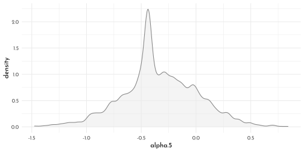
chimp_posterior %>%
mutate(across(starts_with("beta"),
.fns = function(x){inv_logit(alpha.2 + gamma.1 + x)},
.names = "{.col}_raw")) %>%
dplyr::select(ends_with("raw"))%>%
summarise(across(everything(),
function(x){list(tibble(mean = mean(x),
pi_lower = PI(x)[1],
pi_upper = PI(x)[2]))})) %>%
pivot_longer(everything()) %>%
unnest(value)#> # A tibble: 4 × 4
#> name mean pi_lower pi_upper
#> <chr> <dbl> <dbl> <dbl>
#> 1 beta.1_raw 0.981 0.944 0.999
#> 2 beta.2_raw 0.989 0.966 0.999
#> 3 beta.3_raw 0.974 0.927 0.998
#> 4 beta.4_raw 0.987 0.962 0.99914.5.2 Posterior Predictions for New Clusters
The average chimp
p1 <- chimp_posterior %>%
mutate(across(starts_with("beta"),
.fns = function(x){inv_logit(alpha_bar + x)},
.names = "{.col}_raw")) %>%
dplyr::select(ends_with("raw"))%>%
summarise(across(everything(),
function(x){
list(tibble(mean = mean(x),
pi_lower = PI(x)[1],
pi_upper = PI(x)[2]))
})) %>%
pivot_longer(everything()) %>%
mutate(treatment = str_extract(name, pattern = "[1-4]") %>% as.integer()) %>%
unnest(value) %>%
ggplot(aes(x = treatment)) +
geom_smooth(aes(ymin = pi_lower, y = mean, ymax = pi_upper),
stat = 'identity',
color = clr0dd, fill = fll0dd, size = .5) +
labs(y = "prop_pulled_left",
x = "treatment",
subtitle = "average_actor")
chimp_sim <- chimp_posterior %>%
mutate(sim = rnorm(n = n(),
mean = alpha_bar,
sd = sigma_alpha)) %>%
mutate(across(starts_with("beta"),
.fns = function(x){inv_logit(sim + x)},
.names = "{.col}_sim"))
p2 <- chimp_sim %>%
dplyr::select(ends_with("_sim")) %>%
summarise(across(everything(),
function(x){
list(tibble(mean = mean(x),
pi_lower = PI(x)[1],
pi_upper = PI(x)[2]))
})) %>%
pivot_longer(everything()) %>%
mutate(treatment = str_extract(name, pattern = "[1-4]") %>% as.integer()) %>%
unnest(value) %>%
ggplot(aes(x = treatment)) +
geom_smooth(aes(ymin = pi_lower, y = mean, ymax = pi_upper),
stat = 'identity',
color = clr0dd, fill = fll0dd, size = .5) +
labs(y = "prop_pulled_left",
x = "treatment",
subtitle = "marginal_of_actor") +
coord_cartesian(ylim = 0:1) +
theme(panel.grid.minor.x = element_blank())
p3 <- chimp_sim %>%
dplyr::select(ends_with("_sim")) %>%
mutate(.draw = row_number()) %>%
filter(row_number() < 101) %>%
pivot_longer(ends_with("_sim")) %>%
mutate(treatment = str_extract(name, pattern = "[1-4]") %>% as.integer()) %>%
ggplot(aes(x = treatment, y = value, group = .draw)) +
geom_line(color = clr_alpha(clr_dark, .4))+
labs(y = "prop_pulled_left",
x = "treatment",
subtitle = "simulated_actors")
p1 + p2 + p3 &
scale_x_continuous(breaks = 1:4,
labels = c("R|N", "L|N", "R|P", "L|P")) &
coord_cartesian(ylim = 0:1) &
theme(panel.grid.minor.x = element_blank())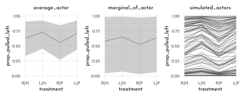
library(rlang)
chapter13_models <- env(
)
write_rds(chapter13_models, "envs/chapter13_models.rds")14.6 Homework
E1
- \(\alpha_{TANK} \sim \textrm{Normal}(0,1)\)
- \(\cancel{\alpha_{TANK} \sim \textrm{Normal}(0,2)}\)
E2
\[ \begin{array}{rclr} y_{i} & \sim & \textrm{Binomial}(1, p_{i}) & \\ \textrm{logit}(p_{i}) & = & \alpha_{GROUP[i]} + \beta x_{i} &\\ \alpha_{GROUP} & \sim & \textrm{Normal}(\bar{\alpha}, \sigma_{\alpha}) &\\ \beta & \sim & \textrm{Normal}(0, 0.5) &\\ \bar{\alpha} & \sim & \textrm{Normal}(0, 1.5) & \textrm{[hyperprior]}\\ \sigma_{\alpha} & \sim & \textrm{Exponential}(1) & \textrm{[hyperprior]} \end{array} \]
E3
\[ \begin{array}{rclr} y_{i} & \sim & \textrm{Normal}(\mu_{i}, \sigma) & \\ \textrm{logit}(\mu_{i}) & = & \alpha_{GROUP[i]} + \beta x_{i} &\\ \alpha_{GROUP} & \sim & \textrm{Normal}(\bar{\alpha }, \sigma_{\alpha}) &\\ \beta & \sim & \textrm{Normal}(0, 1) &\\ \sigma & \sim & \textrm{Exponential}(1) & \\ \bar{\alpha} & \sim & \textrm{Normal}(0, 5) & \textrm{[hyperprior]}\\ \sigma_{\alpha} & \sim & \textrm{Exponential}(1) & \textrm{[hyperprior]} \end{array} \]
E4
\[ \begin{array}{rclr} y_{i} & \sim & \textrm{Poisson}(\lambda_{i}) & \\ \textrm{log}(\lambda_{i}) & = & \alpha_{GROUP[i]} + \beta x_{i} &\\ \alpha_{GROUP} & \sim & \textrm{Normal}(\bar{\alpha }, \sigma_{\alpha}) &\\ \beta & \sim & \textrm{Normal}(0, 1) &\\ \bar{\alpha} & \sim & \textrm{Normal}(3, .5) & \textrm{[hyperprior]}\\ \sigma_{\alpha} & \sim & \textrm{Exponential}(1) & \textrm{[hyperprior]} \end{array} \] E5
\[ \begin{array}{rclr} y_{i} & \sim & \textrm{Poisson}(\lambda_{i}) & \\ \textrm{log}(\lambda_{i}) & = & \alpha_{GROUP[i]} + \gamma_{BLOCK[i]} + \beta x_{i} &\\ \alpha_{GROUP} & \sim & \textrm{Normal}(\bar{\alpha}, \sigma_{\alpha}) &\\ \gamma_{BLOCK} & \sim & \textrm{Normal}(0, \sigma_{\gamma}) & \textrm{[ 0 to avoid the ''legs issue'']}\\ \beta & \sim & \textrm{Normal}(0, 1) &\\ \bar{\alpha} & \sim & \textrm{Normal}(3, .5) & \textrm{[hyperprior]}\\ \sigma_{\alpha} & \sim & \textrm{Exponential}(1) & \textrm{[hyperprior]}\\ \sigma_{\gamma} & \sim & \textrm{Exponential}(1) & \textrm{[hyperprior]} \end{array} \]
M1
Now also include predation and size as clusters within the model.
We will be using the non-centered model notation:
model_frog_tank <- ulam(
flist = alist(
surv ~ dbinom( density, p ),
logit(p) <- alpha_bar +
z_alpha[tank] * sigma_alpha,
z_alpha[tank] ~ dnorm(0, 1),
alpha_bar ~ dnorm(0, 1.5),
sigma_alpha ~ dexp(1),
gq> vector[tank]:alpha <<- alpha_bar + z_alpha * sigma_alpha
),
data = data_frogs,
cores = 4,
chains = 4,
log_lik = TRUE
)
model_frog_pred <- ulam(
flist = alist(
surv ~ dbinom( density, p ),
logit(p) <- alpha_bar +
z_alpha[tank] * sigma_alpha +
z_gamma[pred] * sigma_gamma,
z_alpha[tank] ~ dnorm(0, 1),
z_gamma[pred] ~ dnorm(0, 1),
alpha_bar ~ dnorm(0, 1.5),
c(sigma_alpha, sigma_gamma) ~ dexp(1),
gq> vector[tank]:alpha <<- alpha_bar + z_alpha * sigma_alpha,
gq> vector[pred]:gamma <<- z_gamma * sigma_gamma
),
data = data_frogs,
cores = 4,
chains = 4,
log_lik = TRUE
)
model_frog_size <- ulam(
flist = alist(
surv ~ dbinom( density, p ),
logit(p) <- alpha_bar +
z_alpha[tank] * sigma_alpha +
z_delta[size] * sigma_delta,
z_alpha[tank] ~ dnorm(0, 1),
z_delta[size] ~ dnorm(0, 1),
alpha_bar ~ dnorm(0, 1.5),
c(sigma_alpha, sigma_delta) ~ dexp(1),
gq> vector[tank]:alpha <<- alpha_bar + z_alpha * sigma_alpha,
gq> vector[size]:delta <<- z_delta * sigma_delta
),
data = data_frogs,
cores = 4,
chains = 4,
log_lik = TRUE
)
model_frog_combined <- ulam(
flist = alist(
surv ~ dbinom( density, p ),
logit(p) <- alpha_bar +
z_alpha[tank] * sigma_alpha +
z_gamma[pred] * sigma_gamma +
z_delta[size] * sigma_delta,
z_alpha[tank] ~ dnorm(0, 1),
z_gamma[pred] ~ dnorm(0, 1),
z_delta[size] ~ dnorm(0, 1),
alpha_bar ~ dnorm(0, 1.5),
c(sigma_alpha, sigma_gamma, sigma_delta) ~ dexp(1),
gq> vector[tank]:alpha <<- alpha_bar + z_alpha * sigma_alpha,
gq> vector[pred]:gamma <<- z_gamma * sigma_gamma,
gq> vector[size]:delta <<- z_delta * sigma_delta
),
data = data_frogs,
cores = 4,
chains = 4,
log_lik = TRUE
)
data_frogs_ind <- data_frogs %>%
mutate(pred_ind = abs(1L - as.integer(pred)))
model_frog_interact <- ulam(
flist = alist(
surv ~ dbinom( density, p ),
logit(p) <- alpha_bar +
z_alpha[tank] * sigma_alpha +
z_gamma[pred] * sigma_gamma +
z_delta[size] * sigma_delta +
z_epsilon[size] * pred_ind * sigma_epsilon,
z_alpha[tank] ~ dnorm(0, 1),
z_gamma[pred] ~ dnorm(0, 1),
z_delta[size] ~ dnorm(0, 1),
z_epsilon[size] ~ dnorm(0, 1),
alpha_bar ~ dnorm(0, 1.5),
c(sigma_alpha, sigma_gamma, sigma_delta, sigma_epsilon) ~ dexp(1),
gq> vector[tank]:alpha <<- alpha_bar + z_alpha * sigma_alpha,
gq> vector[pred]:gamma <<- z_gamma * sigma_gamma,
gq> vector[size]:delta <<- z_delta * sigma_delta,
gq> vector[size]:epsilon <<- z_epsilon * sigma_epsilon
),
data = data_frogs_ind,
cores = 4,
chains = 4,
log_lik = TRUE
)get_sigma_alpha <- function(model, mod_lab){
model %>%
precis() %>%
data.frame() %>%
rownames_to_column() %>%
filter(rowname == "sigma_alpha") %>%
dplyr::select(-rowname) %>%
pivot_longer(everything(), names_to = "param") %>%
mutate(model = mod_lab)
}
list(model_frog_tank,
model_frog_pred,
model_frog_size,
model_frog_combined,
model_frog_interact) %>%
map2_dfr(.y = c("tank","pred","size","combine", "interact"),
get_sigma_alpha) %>%
pivot_wider(names_from = "param",
values_from = "value") %>%
ggplot(aes(y = model)) +
geom_vline(xintercept = 0, linetype = 3, color = clr_dark) +
geom_linerange(aes(xmin = `X5.5.`, xmax = `X94.5.`),
color = clr0dd) +
geom_point(aes(x = mean),
color = clr0dd, fill = clr0,
shape = 21, size = 2) +
coord_cartesian(xlim = c(0, 2)) +
labs(subtitle = "estimates of sigma_alpha",
x = "sigma_alpha")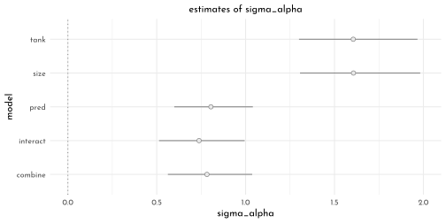
M2
compare(model_frog_tank,
model_frog_pred,
model_frog_size,
model_frog_combined,
model_frog_interact) %>%
knit_precis(param_name = "model")| model | WAIC | SE | dWAIC | dSE | pWAIC | weight |
|---|---|---|---|---|---|---|
| model_frog_combined | 199.97 | 8.98 | 0.00 | NA | 19.31 | 0.29 |
| model_frog_interact | 200.08 | 9.32 | 0.12 | 1.95 | 19.11 | 0.27 |
| model_frog_tank | 200.33 | 7.18 | 0.36 | 5.97 | 20.99 | 0.24 |
| model_frog_pred | 202.10 | 9.61 | 2.14 | 1.76 | 20.43 | 0.10 |
| model_frog_size | 202.28 | 7.50 | 2.31 | 5.98 | 21.83 | 0.09 |
p1 <- link(model_frog_pred) %>%
as_tibble() %>%
summarise(across(everything(),
.fns = function(x){list(tibble(val = c(quantile(x,
probs = c(.055,.25,.5,.75,.945)),
mean(x)),
label = c("ll", "l", "m", "h", "hh", "mean")))})) %>%
pivot_longer(everything()) %>%
bind_cols(data_frogs,.) %>%
unnest(value) %>%
pivot_wider(names_from = label, values_from = val) %>%
ggplot(aes(x = tank)) +
labs(subtitle = "predation")
p2 <- link(model_frog_interact) %>%
as_tibble() %>%
summarise(across(everything(),
.fns = function(x){list(tibble(val = c(quantile(x,
probs = c(.055,.25,.5,.75,.945)),
mean(x)),
label = c("ll", "l", "m", "h", "hh", "mean")))})) %>%
pivot_longer(everything()) %>%
bind_cols(data_frogs,.) %>%
unnest(value) %>%
pivot_wider(names_from = label, values_from = val) %>%
ggplot(aes(x = tank)) +
labs(subtitle = "interaction model")
p1 + p2 &
geom_linerange(aes(ymin = ll, ymax = hh),
color = clr0dd) &
geom_point(aes(y = m),
color = clr0dd, fill = clr0,
shape = 21, size = 2) &
geom_point(aes(y = propsurv),
color = clr_current,
shape = 1, size = 4)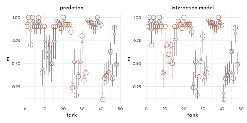
# prep_pred <- link(model_frog_pred) %>%
# as_tibble() %>%
# summarise(across(everything(),
# .fns = function(x){list(tibble(val_p = c(quantile(x,
# probs = c(.055,.25,.5,.75,.945)),
# mean(x)),
# label = c("ll", "l", "m", "h", "hh", "mean") %>%
# str_c(.,"_pred")))})) %>%
# pivot_longer(everything(),
# values_to = "t_pred")
#
# prep_interct <- link(model_frog_interact) %>%
# as_tibble() %>%
# summarise(across(everything(),
# .fns = function(x){list(tibble(val_i = c(quantile(x,
# probs = c(.055,.25,.5,.75,.945)),
# mean(x)),
# label = c("ll", "l", "m", "h", "hh", "mean") %>%
# str_c(.,"_interact")))})) %>%
# pivot_longer(everything(),
# values_to = "t_interact")
#
# prep_size <- link(model_frog_size) %>%
# as_tibble() %>%
# summarise(across(everything(),
# .fns = function(x){list(tibble(val_s = c(quantile(x,
# probs = c(.055,.25,.5,.75,.945)),
# mean(x)),
# label = c("ll", "l", "m", "h", "hh", "mean") %>%
# str_c(.,"_size")))})) %>%
# pivot_longer(everything(),
# values_to = "t_size")
#
# posterior_frogs_tripple <- list(prep_pred,
# prep_size,
# prep_interct) %>%
# reduce(left_join) %>%
# bind_cols(data_frogs,. ) %>%
# unnest(t_pred) %>%
# pivot_wider(names_from = label, values_from = val_p) %>%
# unnest(t_size) %>%
# pivot_wider(names_from = label, values_from = val_s) %>%
# unnest(t_interact) %>%
# pivot_wider(names_from = label, values_from = val_i)
#
# p1 <- posterior_frogs_tripple %>%
# ggplot(aes(x = m_pred, y = m_interact)) +
# geom_linerange(aes(xmin = ll_pred, xmax = hh_pred),
# color = clr0dd)+
# geom_linerange(aes(ymin = ll_interact, ymax = hh_interact),
# color = clr0dd) +
# geom_point(color = clr0dd, fill = clr0,
# shape = 21, size = 2)
#
# p2 <- posterior_frogs_tripple %>%
# ggplot(aes(x = m_pred, y = m_size)) +
# geom_linerange(aes(xmin = ll_pred, xmax = hh_pred),
# color = clr0dd)+
# geom_linerange(aes(ymin = ll_size, ymax = hh_size),
# color = clr0dd) +
# geom_point(color = clr0dd, fill = clr0,
# shape = 21, size = 2)
#
# p1 + p2 &
# geom_abline(slope = 1, intercept = 0, linetype = 3, color = clr_current)
plot_posterior <- function(model){
data_prep <- extract.samples(model) %>%
data.frame() %>%
as_tibble() %>%
dplyr::select(c(alpha_bar, starts_with("sigma")))
data_prep %>%
pivot_longer(everything()) %>%
ggplot(aes(y = name, x = value)) +
geom_vline(xintercept = 0, linetype = 3, color = clr_dark)+
stat_slab(adjust = .75, size = .5, normalize = "xy",
color = clr0dd, fill = fll0) +
coord_cartesian(ylim = c(.9, ncol(data_prep)+1.1),
xlim = c(-2.5, 5),
expand = 0)+
labs(subtitle = deparse(substitute(model)) %>% str_remove("model_frog_"),
y = NULL, x = NULL)
}
((plot_posterior(model_frog_tank) + theme(axis.text.x = element_blank())) /
(plot_posterior(model_frog_pred) + theme(axis.text.x = element_blank())) /
plot_posterior(model_frog_size)) |
((plot_posterior(model_frog_combined) + theme(axis.text.x = element_blank())) /
plot_posterior(model_frog_interact))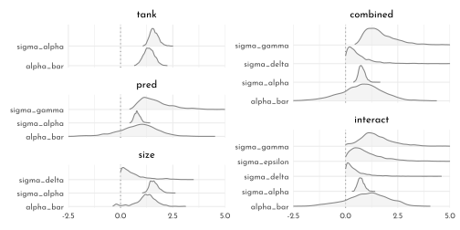
M3
model_frog_cauchy <- ulam(
flist = alist(
surv ~ dbinom( density, p ),
logit(p) <- alpha_bar +
z_alpha[tank] * sigma_alpha,
z_alpha[tank] ~ dcauchy(0, 1),
alpha_bar ~ dnorm(0, 1.5),
sigma_alpha ~ dexp(1),
gq> vector[tank]:alpha <<- alpha_bar + z_alpha * sigma_alpha
),
data = data_frogs,
control = list(adapt_delta = 0.99),
cores = 4,
chains = 4,
max_treedepth = 15,
log_lik = TRUE
)Cauchy fit
precis(model_frog_cauchy, depth = 2) %>%
knit_precis()| param | mean | sd | 5.5% | 94.5% | n_eff | Rhat4 |
|---|---|---|---|---|---|---|
| z_alpha[1] | 0.54 | 0.90 | -0.71 | 2.10 | 1276.94 | 1.00 |
| z_alpha[2] | 3.52 | 5.91 | -0.05 | 11.56 | 135.29 | 1.03 |
| z_alpha[3] | -0.38 | 0.65 | -1.39 | 0.63 | 1210.19 | 1.00 |
| z_alpha[4] | 4.17 | 6.65 | 0.05 | 16.75 | 200.48 | 1.01 |
| z_alpha[5] | 0.52 | 0.86 | -0.63 | 1.94 | 1198.49 | 1.00 |
| z_alpha[6] | 0.53 | 0.91 | -0.66 | 2.07 | 933.13 | 1.00 |
| z_alpha[7] | 11.30 | 48.65 | 0.00 | 17.05 | 49.16 | 1.08 |
| z_alpha[8] | 0.60 | 1.09 | -0.63 | 2.35 | 339.69 | 1.01 |
| z_alpha[9] | -1.67 | 0.95 | -3.38 | -0.40 | 243.20 | 1.02 |
| z_alpha[10] | 0.53 | 0.91 | -0.60 | 1.93 | 843.89 | 1.00 |
| z_alpha[11] | -0.36 | 0.72 | -1.50 | 0.69 | 751.96 | 1.00 |
| z_alpha[12] | -0.78 | 0.73 | -2.05 | 0.27 | 589.85 | 1.01 |
| z_alpha[13] | -0.41 | 0.70 | -1.58 | 0.65 | 1080.07 | 1.00 |
| z_alpha[14] | -1.21 | 0.81 | -2.59 | -0.08 | 380.78 | 1.01 |
| z_alpha[15] | 0.56 | 0.94 | -0.69 | 2.13 | 954.72 | 1.00 |
| z_alpha[16] | 0.52 | 0.88 | -0.63 | 1.99 | 1230.22 | 1.00 |
| z_alpha[17] | 1.40 | 1.02 | 0.09 | 3.12 | 1045.03 | 1.00 |
| z_alpha[18] | 0.80 | 0.75 | -0.17 | 2.10 | 811.23 | 1.00 |
| z_alpha[19] | 0.45 | 0.63 | -0.45 | 1.51 | 919.59 | 1.00 |
| z_alpha[20] | 8.42 | 13.35 | 0.76 | 32.90 | 193.79 | 1.02 |
| z_alpha[21] | 0.81 | 0.77 | -0.23 | 2.10 | 817.38 | 1.01 |
| z_alpha[22] | 0.81 | 0.76 | -0.21 | 2.08 | 1144.96 | 1.00 |
| z_alpha[23] | 0.80 | 0.75 | -0.19 | 2.04 | 1139.41 | 1.00 |
| z_alpha[24] | 0.16 | 0.57 | -0.69 | 1.10 | 819.55 | 1.00 |
| z_alpha[25] | -2.75 | 1.01 | -4.54 | -1.46 | 126.32 | 1.04 |
| z_alpha[26] | -1.36 | 0.69 | -2.55 | -0.44 | 175.42 | 1.03 |
| z_alpha[27] | -3.30 | 1.18 | -5.37 | -1.81 | 122.51 | 1.05 |
| z_alpha[28] | -2.10 | 0.85 | -3.64 | -0.98 | 131.11 | 1.04 |
| z_alpha[29] | -1.36 | 0.71 | -2.59 | -0.44 | 169.72 | 1.03 |
| z_alpha[30] | -0.04 | 0.53 | -0.87 | 0.85 | 1098.81 | 1.00 |
| z_alpha[31] | -2.30 | 0.92 | -3.83 | -1.16 | 119.19 | 1.04 |
| z_alpha[32] | -1.92 | 0.80 | -3.35 | -0.86 | 134.78 | 1.04 |
| z_alpha[33] | 1.79 | 1.10 | 0.42 | 3.83 | 894.87 | 1.00 |
| z_alpha[34] | 1.12 | 0.79 | 0.10 | 2.46 | 495.15 | 1.01 |
| z_alpha[35] | 1.15 | 0.79 | 0.12 | 2.56 | 907.07 | 1.00 |
| z_alpha[36] | 0.50 | 0.55 | -0.31 | 1.38 | 822.24 | 1.00 |
| z_alpha[37] | 0.51 | 0.58 | -0.30 | 1.47 | 981.42 | 1.00 |
| z_alpha[38] | 11.39 | 26.01 | 1.15 | 41.99 | 133.00 | 1.02 |
| z_alpha[39] | 1.13 | 0.78 | 0.09 | 2.47 | 1276.52 | 1.00 |
| z_alpha[40] | 0.78 | 0.68 | -0.12 | 1.92 | 994.64 | 1.00 |
| z_alpha[41] | -3.77 | 1.27 | -5.86 | -2.14 | 121.82 | 1.04 |
| z_alpha[42] | -2.23 | 0.85 | -3.71 | -1.17 | 123.56 | 1.04 |
| z_alpha[43] | -2.09 | 0.81 | -3.46 | -1.06 | 123.75 | 1.04 |
| z_alpha[44] | -1.95 | 0.77 | -3.30 | -0.96 | 126.32 | 1.04 |
| z_alpha[45] | -0.90 | 0.57 | -1.86 | -0.09 | 221.86 | 1.02 |
| z_alpha[46] | -2.23 | 0.86 | -3.69 | -1.15 | 118.63 | 1.05 |
| z_alpha[47] | 0.49 | 0.55 | -0.33 | 1.43 | 1069.80 | 1.00 |
| z_alpha[48] | -1.56 | 0.70 | -2.77 | -0.67 | 138.37 | 1.03 |
| alpha_bar | 1.49 | 0.29 | 1.02 | 1.95 | 224.20 | 1.02 |
| sigma_alpha | 1.00 | 0.25 | 0.64 | 1.42 | 101.59 | 1.06 |
| alpha[1] | 2.04 | 0.82 | 0.91 | 3.50 | 1431.46 | 1.00 |
| alpha[2] | 4.92 | 5.28 | 1.46 | 13.44 | 180.91 | 1.02 |
| alpha[3] | 1.14 | 0.59 | 0.22 | 2.09 | 1227.47 | 1.00 |
| alpha[4] | 5.63 | 6.96 | 1.56 | 16.74 | 205.68 | 1.02 |
| alpha[5] | 2.01 | 0.80 | 0.94 | 3.41 | 1577.47 | 1.00 |
| alpha[6] | 2.02 | 0.84 | 0.87 | 3.52 | 1267.89 | 1.00 |
| alpha[7] | 12.04 | 42.78 | 1.50 | 18.39 | 49.18 | 1.08 |
| alpha[8] | 2.07 | 0.92 | 0.94 | 3.68 | 584.52 | 1.00 |
| alpha[9] | -0.06 | 0.70 | -1.19 | 1.06 | 2418.94 | 1.00 |
| alpha[10] | 2.02 | 0.84 | 0.94 | 3.42 | 1005.65 | 1.00 |
| alpha[11] | 1.16 | 0.64 | 0.13 | 2.17 | 1579.65 | 1.00 |
| alpha[12] | 0.77 | 0.62 | -0.21 | 1.74 | 2058.63 | 1.00 |
| alpha[13] | 1.11 | 0.64 | 0.10 | 2.10 | 1736.01 | 1.00 |
| alpha[14] | 0.36 | 0.64 | -0.67 | 1.36 | 2475.54 | 1.00 |
| alpha[15] | 2.04 | 0.85 | 0.89 | 3.53 | 1118.71 | 1.00 |
| alpha[16] | 2.02 | 0.82 | 0.89 | 3.38 | 1398.31 | 1.00 |
| alpha[17] | 2.86 | 0.92 | 1.65 | 4.52 | 1353.29 | 1.00 |
| alpha[18] | 2.27 | 0.65 | 1.39 | 3.43 | 1537.40 | 1.00 |
| alpha[19] | 1.94 | 0.56 | 1.10 | 2.91 | 2591.07 | 1.00 |
| alpha[20] | 9.77 | 13.46 | 2.29 | 32.70 | 194.36 | 1.02 |
| alpha[21] | 2.28 | 0.65 | 1.38 | 3.43 | 1402.91 | 1.00 |
| alpha[22] | 2.29 | 0.67 | 1.34 | 3.45 | 1525.88 | 1.00 |
| alpha[23] | 2.27 | 0.67 | 1.38 | 3.41 | 1417.97 | 1.00 |
| alpha[24] | 1.66 | 0.49 | 0.92 | 2.49 | 2208.92 | 1.00 |
| alpha[25] | -1.06 | 0.48 | -1.85 | -0.30 | 3826.69 | 1.00 |
| alpha[26] | 0.23 | 0.41 | -0.44 | 0.89 | 3298.78 | 1.00 |
| alpha[27] | -1.57 | 0.54 | -2.47 | -0.78 | 2958.41 | 1.00 |
| alpha[28] | -0.46 | 0.42 | -1.15 | 0.20 | 3327.90 | 1.00 |
| alpha[29] | 0.24 | 0.42 | -0.45 | 0.91 | 3811.62 | 1.00 |
| alpha[30] | 1.47 | 0.46 | 0.76 | 2.23 | 2526.40 | 1.00 |
| alpha[31] | -0.64 | 0.42 | -1.32 | 0.03 | 3017.64 | 1.00 |
| alpha[32] | -0.28 | 0.40 | -0.93 | 0.35 | 3732.62 | 1.00 |
| alpha[33] | 3.21 | 0.94 | 1.99 | 4.90 | 1298.74 | 1.00 |
| alpha[34] | 2.58 | 0.64 | 1.69 | 3.70 | 1186.97 | 1.00 |
| alpha[35] | 2.61 | 0.66 | 1.68 | 3.79 | 1683.87 | 1.00 |
| alpha[36] | 1.98 | 0.46 | 1.29 | 2.77 | 2180.86 | 1.00 |
| alpha[37] | 1.99 | 0.49 | 1.26 | 2.85 | 1885.35 | 1.00 |
| alpha[38] | 12.46 | 27.29 | 2.72 | 38.05 | 144.99 | 1.01 |
| alpha[39] | 2.59 | 0.67 | 1.66 | 3.76 | 2120.85 | 1.00 |
| alpha[40] | 2.25 | 0.57 | 1.45 | 3.23 | 1897.47 | 1.00 |
| alpha[41] | -2.02 | 0.56 | -2.98 | -1.18 | 2994.60 | 1.00 |
| alpha[42] | -0.58 | 0.37 | -1.19 | 0.01 | 3170.95 | 1.00 |
| alpha[43] | -0.45 | 0.36 | -1.02 | 0.11 | 4132.21 | 1.00 |
| alpha[44] | -0.32 | 0.34 | -0.86 | 0.22 | 4135.91 | 1.00 |
| alpha[45] | 0.67 | 0.36 | 0.12 | 1.22 | 3093.76 | 1.00 |
| alpha[46] | -0.57 | 0.36 | -1.17 | 0.00 | 3838.30 | 1.00 |
| alpha[47] | 1.98 | 0.46 | 1.29 | 2.77 | 2494.72 | 1.00 |
| alpha[48] | 0.05 | 0.35 | -0.51 | 0.61 | 3303.74 | 1.00 |
Gaussian fit
precis(model_frog_tank, depth = 2) %>%
knit_precis()| param | mean | sd | 5.5% | 94.5% | n_eff | Rhat4 |
|---|---|---|---|---|---|---|
| z_alpha[1] | 0.49 | 0.57 | -0.41 | 1.45 | 1870.38 | 1.00 |
| z_alpha[2] | 1.06 | 0.69 | 0.05 | 2.26 | 2000.23 | 1.00 |
| z_alpha[3] | -0.23 | 0.44 | -0.90 | 0.50 | 1991.04 | 1.00 |
| z_alpha[4] | 1.07 | 0.67 | 0.10 | 2.23 | 1893.13 | 1.00 |
| z_alpha[5] | 0.50 | 0.56 | -0.33 | 1.47 | 1592.06 | 1.00 |
| z_alpha[6] | 0.47 | 0.55 | -0.34 | 1.40 | 2138.12 | 1.00 |
| z_alpha[7] | 1.06 | 0.68 | 0.08 | 2.19 | 1489.88 | 1.00 |
| z_alpha[8] | 0.50 | 0.58 | -0.36 | 1.48 | 1601.97 | 1.00 |
| z_alpha[9] | -0.97 | 0.41 | -1.62 | -0.35 | 1105.24 | 1.00 |
| z_alpha[10] | 0.49 | 0.56 | -0.34 | 1.47 | 1731.87 | 1.00 |
| z_alpha[11] | -0.22 | 0.45 | -0.91 | 0.51 | 1473.10 | 1.00 |
| z_alpha[12] | -0.50 | 0.42 | -1.15 | 0.19 | 1447.45 | 1.00 |
| z_alpha[13] | -0.23 | 0.44 | -0.89 | 0.49 | 1237.91 | 1.00 |
| z_alpha[14] | -0.73 | 0.43 | -1.43 | -0.02 | 1022.57 | 1.00 |
| z_alpha[15] | 0.50 | 0.56 | -0.36 | 1.44 | 1870.68 | 1.00 |
| z_alpha[16] | 0.50 | 0.55 | -0.34 | 1.43 | 1805.64 | 1.00 |
| z_alpha[17] | 0.98 | 0.52 | 0.23 | 1.89 | 1676.62 | 1.00 |
| z_alpha[18] | 0.65 | 0.43 | 0.04 | 1.38 | 1158.41 | 1.00 |
| z_alpha[19] | 0.41 | 0.38 | -0.18 | 1.06 | 1078.99 | 1.00 |
| z_alpha[20] | 1.43 | 0.62 | 0.52 | 2.50 | 1760.28 | 1.00 |
| z_alpha[21] | 0.65 | 0.43 | 0.03 | 1.39 | 1756.53 | 1.00 |
| z_alpha[22] | 0.67 | 0.47 | -0.03 | 1.46 | 1312.81 | 1.00 |
| z_alpha[23] | 0.65 | 0.43 | 0.00 | 1.37 | 1349.87 | 1.00 |
| z_alpha[24] | 0.22 | 0.37 | -0.33 | 0.85 | 1059.37 | 1.00 |
| z_alpha[25] | -1.49 | 0.35 | -2.07 | -0.96 | 708.91 | 1.00 |
| z_alpha[26] | -0.75 | 0.30 | -1.24 | -0.28 | 678.36 | 1.00 |
| z_alpha[27] | -1.76 | 0.36 | -2.35 | -1.19 | 680.12 | 1.00 |
| z_alpha[28] | -1.15 | 0.31 | -1.67 | -0.67 | 578.92 | 1.01 |
| z_alpha[29] | -0.76 | 0.30 | -1.25 | -0.29 | 642.74 | 1.00 |
| z_alpha[30] | 0.06 | 0.34 | -0.48 | 0.62 | 899.51 | 1.00 |
| z_alpha[31] | -1.26 | 0.31 | -1.80 | -0.80 | 641.76 | 1.00 |
| z_alpha[32] | -1.05 | 0.31 | -1.56 | -0.58 | 598.01 | 1.00 |
| z_alpha[33] | 1.14 | 0.50 | 0.42 | 2.00 | 1546.38 | 1.00 |
| z_alpha[34] | 0.84 | 0.44 | 0.19 | 1.61 | 1029.88 | 1.00 |
| z_alpha[35] | 0.85 | 0.44 | 0.19 | 1.58 | 1224.98 | 1.00 |
| z_alpha[36] | 0.45 | 0.35 | -0.08 | 1.02 | 1229.36 | 1.00 |
| z_alpha[37] | 0.45 | 0.37 | -0.11 | 1.06 | 766.67 | 1.00 |
| z_alpha[38] | 1.58 | 0.58 | 0.71 | 2.58 | 1654.66 | 1.00 |
| z_alpha[39] | 0.86 | 0.45 | 0.20 | 1.61 | 1364.17 | 1.00 |
| z_alpha[40] | 0.62 | 0.40 | 0.03 | 1.28 | 1126.64 | 1.00 |
| z_alpha[41] | -1.99 | 0.38 | -2.64 | -1.43 | 606.72 | 1.00 |
| z_alpha[42] | -1.22 | 0.28 | -1.68 | -0.78 | 529.53 | 1.00 |
| z_alpha[43] | -1.15 | 0.29 | -1.63 | -0.70 | 572.59 | 1.00 |
| z_alpha[44] | -1.07 | 0.28 | -1.53 | -0.64 | 533.62 | 1.00 |
| z_alpha[45] | -0.49 | 0.28 | -0.95 | -0.07 | 582.37 | 1.00 |
| z_alpha[46] | -1.22 | 0.29 | -1.69 | -0.76 | 491.84 | 1.01 |
| z_alpha[47] | 0.44 | 0.36 | -0.11 | 1.04 | 687.16 | 1.00 |
| z_alpha[48] | -0.86 | 0.26 | -1.30 | -0.47 | 515.20 | 1.00 |
| alpha_bar | 1.36 | 0.25 | 0.97 | 1.77 | 254.02 | 1.02 |
| sigma_alpha | 1.61 | 0.21 | 1.30 | 1.97 | 487.86 | 1.00 |
| alpha[1] | 2.14 | 0.89 | 0.78 | 3.67 | 2251.43 | 1.00 |
| alpha[2] | 3.06 | 1.13 | 1.43 | 5.04 | 2049.97 | 1.00 |
| alpha[3] | 1.00 | 0.67 | -0.03 | 2.13 | 3233.64 | 1.00 |
| alpha[4] | 3.08 | 1.09 | 1.54 | 5.02 | 1817.81 | 1.00 |
| alpha[5] | 2.16 | 0.87 | 0.87 | 3.64 | 1949.71 | 1.00 |
| alpha[6] | 2.12 | 0.85 | 0.89 | 3.56 | 2576.70 | 1.00 |
| alpha[7] | 3.06 | 1.12 | 1.52 | 4.92 | 1360.12 | 1.00 |
| alpha[8] | 2.15 | 0.91 | 0.84 | 3.69 | 2001.80 | 1.00 |
| alpha[9] | -0.18 | 0.60 | -1.17 | 0.74 | 2376.60 | 1.00 |
| alpha[10] | 2.15 | 0.87 | 0.84 | 3.65 | 2072.54 | 1.00 |
| alpha[11] | 1.00 | 0.68 | -0.02 | 2.12 | 3102.50 | 1.00 |
| alpha[12] | 0.56 | 0.64 | -0.42 | 1.61 | 2703.44 | 1.00 |
| alpha[13] | 0.99 | 0.66 | -0.04 | 2.09 | 2489.94 | 1.00 |
| alpha[14] | 0.20 | 0.65 | -0.81 | 1.27 | 2403.15 | 1.00 |
| alpha[15] | 2.15 | 0.89 | 0.78 | 3.63 | 1975.27 | 1.00 |
| alpha[16] | 2.16 | 0.87 | 0.86 | 3.63 | 1987.94 | 1.00 |
| alpha[17] | 2.93 | 0.83 | 1.74 | 4.33 | 2267.23 | 1.00 |
| alpha[18] | 2.39 | 0.64 | 1.47 | 3.51 | 2108.60 | 1.00 |
| alpha[19] | 2.01 | 0.56 | 1.17 | 2.93 | 2544.19 | 1.00 |
| alpha[20] | 3.65 | 1.01 | 2.22 | 5.40 | 1846.68 | 1.00 |
| alpha[21] | 2.40 | 0.64 | 1.43 | 3.48 | 2515.23 | 1.00 |
| alpha[22] | 2.43 | 0.72 | 1.36 | 3.70 | 1963.71 | 1.00 |
| alpha[23] | 2.39 | 0.65 | 1.41 | 3.52 | 2089.73 | 1.00 |
| alpha[24] | 1.71 | 0.54 | 0.89 | 2.59 | 2633.50 | 1.00 |
| alpha[25] | -1.01 | 0.46 | -1.76 | -0.32 | 3538.34 | 1.00 |
| alpha[26] | 0.17 | 0.40 | -0.47 | 0.80 | 3542.02 | 1.00 |
| alpha[27] | -1.43 | 0.48 | -2.20 | -0.69 | 3041.17 | 1.00 |
| alpha[28] | -0.46 | 0.41 | -1.12 | 0.16 | 3521.79 | 1.00 |
| alpha[29] | 0.15 | 0.39 | -0.50 | 0.79 | 3189.08 | 1.00 |
| alpha[30] | 1.46 | 0.49 | 0.71 | 2.29 | 2432.75 | 1.00 |
| alpha[31] | -0.64 | 0.41 | -1.31 | -0.01 | 2760.34 | 1.00 |
| alpha[32] | -0.30 | 0.40 | -0.92 | 0.33 | 2986.85 | 1.00 |
| alpha[33] | 3.17 | 0.76 | 2.09 | 4.51 | 2773.68 | 1.00 |
| alpha[34] | 2.70 | 0.66 | 1.75 | 3.78 | 2240.81 | 1.00 |
| alpha[35] | 2.70 | 0.64 | 1.77 | 3.81 | 2145.08 | 1.00 |
| alpha[36] | 2.07 | 0.50 | 1.33 | 2.95 | 2937.14 | 1.00 |
| alpha[37] | 2.06 | 0.53 | 1.26 | 2.96 | 2684.41 | 1.00 |
| alpha[38] | 3.89 | 0.96 | 2.53 | 5.58 | 1751.60 | 1.00 |
| alpha[39] | 2.73 | 0.68 | 1.74 | 3.90 | 2693.78 | 1.00 |
| alpha[40] | 2.35 | 0.56 | 1.51 | 3.28 | 2141.12 | 1.00 |
| alpha[41] | -1.80 | 0.48 | -2.64 | -1.08 | 3187.34 | 1.00 |
| alpha[42] | -0.57 | 0.34 | -1.11 | -0.02 | 2881.39 | 1.00 |
| alpha[43] | -0.46 | 0.34 | -1.00 | 0.09 | 3305.89 | 1.00 |
| alpha[44] | -0.34 | 0.34 | -0.88 | 0.18 | 2982.16 | 1.00 |
| alpha[45] | 0.59 | 0.36 | 0.03 | 1.18 | 3413.59 | 1.00 |
| alpha[46] | -0.57 | 0.35 | -1.17 | -0.03 | 3121.54 | 1.00 |
| alpha[47] | 2.06 | 0.51 | 1.29 | 2.92 | 2469.40 | 1.00 |
| alpha[48] | 0.00 | 0.33 | -0.53 | 0.53 | 2517.00 | 1.00 |
precis(model_frog_cauchy, depth = 2) %>%
data.frame() %>%
rownames_to_column() %>%
dplyr::select(rowname, mean_c = mean, ll_c = `X5.5.`, hh_c = X94.5.) %>%
as_tibble() %>%
left_join(precis(model_frog_tank, depth = 2) %>%
data.frame() %>%
rownames_to_column() %>%
dplyr::select(rowname, mean_g = mean, ll_g = `X5.5.`, hh_g = X94.5.) %>%
as_tibble()) %>%
filter(grepl("^alpha", rowname)) %>%
ggplot(aes(x = mean_c, y = mean_g)) +
geom_abline(slope = 1,
intercept = 0,
color = clr_current,
linetype = 3) +
geom_linerange(aes(xmin = ll_c, xmax = hh_c),
color = clr0dd)+
geom_linerange(aes(ymin = ll_g, ymax = hh_g),
color = clr0dd) +
geom_point(color = clr0dd, fill = clr0,
shape = 21, size = 2) +
coord_cartesian(xlim = c(-5, 50))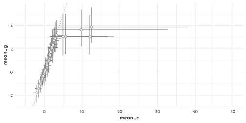
M4
model_frog_student <- ulam(
flist = alist(
surv ~ dbinom( density, p ),
logit(p) <- alpha_bar +
z_alpha[tank] * sigma_alpha,
z_alpha[tank] ~ dstudent(nu = 2, 0, 1),
alpha_bar ~ dnorm(0, 1.5),
sigma_alpha ~ dexp(1),
gq> vector[tank]:alpha <<- alpha_bar + z_alpha * sigma_alpha
),
data = data_frogs,
control = list(adapt_delta = 0.99),
cores = 4,
chains = 4,
max_treedepth = 15,
log_lik = TRUE
)p1 <- precis(model_frog_student, depth = 2) %>%
data.frame() %>%
rownames_to_column() %>%
dplyr::select(rowname, mean_s = mean, ll_s = `X5.5.`, hh_s = X94.5.) %>%
as_tibble() %>%
left_join(precis(model_frog_tank, depth = 2) %>%
data.frame() %>%
rownames_to_column() %>%
dplyr::select(rowname, mean_g = mean, ll_g = `X5.5.`, hh_g = X94.5.) %>%
as_tibble()) %>%
filter(grepl("^alpha", rowname)) %>%
ggplot(aes(x = mean_s, y = mean_g)) +
geom_abline(slope = 1,
intercept = 0,
color = clr_current,
linetype = 3) +
geom_linerange(aes(xmin = ll_s, xmax = hh_s),
color = clr0dd)+
geom_linerange(aes(ymin = ll_g, ymax = hh_g),
color = clr0dd) +
geom_point(color = clr0dd, fill = clr0,
shape = 21, size = 2)
p2 <- precis(model_frog_student, depth = 2) %>%
data.frame() %>%
rownames_to_column() %>%
dplyr::select(rowname, mean_s = mean, ll_s = `X5.5.`, hh_s = X94.5.) %>%
as_tibble() %>%
left_join(precis(model_frog_cauchy, depth = 2) %>%
data.frame() %>%
rownames_to_column() %>%
dplyr::select(rowname, mean_c = mean, ll_c = `X5.5.`, hh_c = X94.5.) %>%
as_tibble()) %>%
filter(grepl("^alpha", rowname)) %>%
ggplot(aes(x = mean_s, y = mean_c)) +
geom_abline(slope = 1,
intercept = 0,
color = clr_current,
linetype = 3) +
geom_linerange(aes(xmin = ll_s, xmax = hh_s),
color = clr0dd)+
geom_linerange(aes(ymin = ll_c, ymax = hh_c),
color = clr0dd) +
geom_point(color = clr0dd, fill = clr0,
shape = 21, size = 2) +
coord_cartesian(ylim = c(-5, 50),
xlim = c(-7, 10))
p1 + p2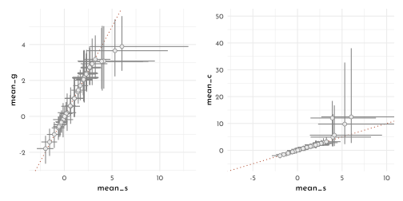
M5
Adding a mean \(\gamma\) to the cimpanzee model
\[ \begin{array}{rcl} \gamma_{j} & \sim & \textrm{Normal}(\bar{\gamma}, \sigma_{\gamma})\\ \bar{\gamma} & \sim & \textrm{Normal}(0, 1.5) \end{array} \]
model_chimp_multicluster_adapt <- ulam(
flist = alist(
pulled_left ~ dbinom( 1, p ),
logit(p) <- alpha[actor] + gamma[block] + beta[treatment],
beta[treatment] ~ dnorm(0,.5),
## adaptive priors
alpha[actor] ~ dnorm( alpha_bar, sigma_alpha ),
gamma[block] ~ dnorm( gamma_bar, sigma_gamma ),
## hyper-priors
alpha_bar ~ dnorm( 0, 1.5 ),
gamma_bar ~ dnorm( 0, 1.5 ),
sigma_alpha ~ dexp(1),
sigma_gamma ~ dexp(1)
),
data = data_chimp_list,
cores = 4,
chains = 4,
log_lik = TRUE
)compare(model_chimp_multicluster,
model_chimp_multicluster_adapt) %>%
knit_precis(param_name = "model")| model | WAIC | SE | dWAIC | dSE | pWAIC | weight |
|---|---|---|---|---|---|---|
| model_chimp_multicluster | 531.72 | 19.11 | 0.00 | NA | 10.31 | 0.58 |
| model_chimp_multicluster_adapt | 532.36 | 19.35 | 0.64 | 0.57 | 10.72 | 0.42 |
precis(model_chimp_multicluster) %>%
knit_precis()| param | mean | sd | 5.5% | 94.5% | n_eff | Rhat4 |
|---|---|---|---|---|---|---|
| alpha_bar | 0.77 | 0.84 | -0.50 | 2.23 | 30.19 | 1.09 |
| sigma_alpha | 2.05 | 0.65 | 1.22 | 3.28 | 943.63 | 1.00 |
| sigma_gamma | 0.19 | 0.17 | 0.01 | 0.50 | 84.28 | 1.05 |
precis(model_chimp_multicluster_adapt) %>%
knit_precis()| param | mean | sd | 5.5% | 94.5% | n_eff | Rhat4 |
|---|---|---|---|---|---|---|
| alpha_bar | 0.32 | 1.10 | -1.39 | 2.07 | 268.26 | 1.02 |
| gamma_bar | 0.36 | 1.09 | -1.41 | 2.12 | 189.44 | 1.03 |
| sigma_alpha | 2.02 | 0.66 | 1.20 | 3.26 | 766.25 | 1.00 |
| sigma_gamma | 0.22 | 0.16 | 0.05 | 0.52 | 407.83 | 1.00 |
bar_alpha_single <- extract.samples(model_chimp_multicluster) %>%
as.data.frame() %>%
as_tibble() %>%
.$alpha_bar %>%
quantile(prob = c(.055, .25, .5, .75, .955)) %>%
tibble(alpha_bar = .,
prob = c("ll", "l", "m", "h", "hh"))
extract.samples(model_chimp_multicluster_adapt) %>%
as.data.frame() %>%
as_tibble() %>%
dplyr::select(ends_with("bar")) %>%
ggplot(aes(x = alpha_bar, y = gamma_bar)) +
geom_rect(data = bar_alpha_single %>%
pivot_wider(names_from = prob,
values_from = alpha_bar),
inherit.aes = FALSE,
aes(xmin = ll, xmax = hh,
ymin = -Inf, ymax = Inf),
color = "transparent", fill = fll0) +
geom_rect(data = bar_alpha_single %>%
pivot_wider(names_from = prob,
values_from = alpha_bar),
inherit.aes = FALSE,
aes(xmin = l, xmax = h,
ymin = -Inf, ymax = Inf),
color = "transparent", fill = fll0) +
geom_hex(aes(color = ..count.., fill = after_scale(clr_alpha(color,.85))),
bins = 40) +
geom_vline(data = bar_alpha_single %>%
pivot_wider(names_from = prob,
values_from = alpha_bar),
aes(xintercept = m),
color = clr_dark, linetype = 3) +
scale_color_gradientn(colours = c(clr_dark, clr0, clr_current)) +
guides(color = guide_colorbar(title.position = "top",
barwidth = unit(.9, "npc"),
barheight = unit(5, "pt"))) +
theme(legend.position = "bottom")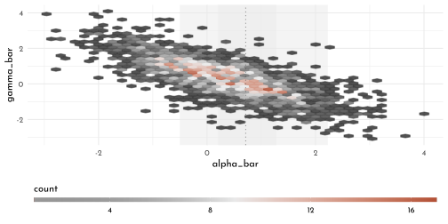
M6
data_y <- list(y = 0)
model_nn <- quap(
flist = alist(
y ~ dnorm(mean = mu, sd = 1),
mu ~ dnorm(mean = 10, sd = 1)
),
data = data_y
)
model_nt <- quap(
flist = alist(
y ~ dnorm(mean = mu, sd = 1),
mu ~ dstudent(nu = 2, mu = 10, sigma = 1)
),
data = data_y
)
model_tn <- quap(
flist = alist(
y ~ dstudent(nu = 2, mu = mu, sigma = 1),
mu ~ dnorm(mean = 10, sd = 1)
),
data = data_y
)
model_tt <- quap(
flist = alist(
y ~ dstudent(nu = 2, mu = mu, sigma = 1),
mu ~ dstudent(nu = 2, mu = 10, sigma = 1)
),
data = data_y
)p1 <- tibble_precis(model_nn) %>%
bind_rows(tibble_precis(model_nt)) %>%
bind_rows(tibble_precis(model_tn)) %>%
bind_rows(tibble_precis(model_tt)) %>%
ggplot(aes(y = model, x = mean)) +
geom_linerange(aes(xmin = `X5.5.`, xmax = `X94.5.`), color = clr0dd) +
geom_point(shape = 21, fill = clr0, color = clr0dd) +
labs(y = NULL, x = "mu")
# x_vect <- seq(-5, 20, length.out = 101)
n <- 1e3
dens_fun <- function(type, x = x_vect,
mean = 10, sd = 1){
switch(type,
"normal" = rnorm(n = n, mean = mean, sd),
"student" = rstudent(n = n, nu = 2, mu = mean,sigma = sd)
)
}
p2 <- crossing(y = c("normal", "student"),
mu = c("normal", "student")) %>%
mutate(model = str_c("model_", str_sub(y,1,1),str_sub(mu, 1,1)),
dist = purrr::map2(y, mu,
function(y, mu){
tibble(y_dens = dens_fun(type = y, mean = 0),
mu_dens = dens_fun(type = mu))})) %>%
unnest(dist) %>%
pivot_longer(cols = y_dens:mu_dens) %>%
mutate(dist = if_else(name == "y_dens", y, mu)) %>%
ggplot(aes(y = model)) +
stat_slab(aes(x = value,
color = dist,
fill = after_scale(clr_alpha(color))),
size = .5, normalize = "xy", height = .85, trim = FALSE) +
coord_cartesian(xlim = c(-5, 15)) +
scale_color_manual(values = c(clr_dark, clr0d)) +
labs(y = NULL)
p1 + p2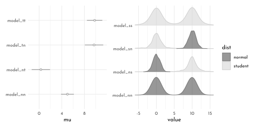
- If the likelihood is \(y \sim Normal()\), it is less likely to be pulled from 0 by the prior for \(\mu\) compared to when \(y \sim Student()\)
- When the prior is \(\mu \sim Normal()\), then it is more regularizing than with \(\mu \sim Student()\) (\(\rightarrow\) it pulls harder)
H1
data("bangladesh")
data_bangaldesh <- bangladesh %>%
as_tibble() %>%
mutate(district_idx = as.integer(as.factor(district))) %>%
rename(contraception = use.contraception)
rm(bangladesh)
tibble(district_idx = sort(unique(data_bangaldesh$district))) %>%
mutate(check_increment = district_idx - lag(district_idx,default = 0)) %>%
arrange(-check_increment)#> # A tibble: 60 × 2
#> district_idx check_increment
#> <int> <dbl>
#> 1 55 2
#> 2 1 1
#> 3 2 1
#> 4 3 1
#> 5 4 1
#> 6 5 1
#> 7 6 1
#> 8 7 1
#> 9 8 1
#> 10 9 1
#> # … with 50 more rowssort(unique(data_bangaldesh$district))#> [1] 1 2 3 4 5 6 7 8 9 10 11 12 13 14 15 16 17 18 19 20 21 22 23 24 25
#> [26] 26 27 28 29 30 31 32 33 34 35 36 37 38 39 40 41 42 43 44 45 46 47 48 49 50
#> [51] 51 52 53 55 56 57 58 59 60 61sort(unique(data_bangaldesh$district_idx))#> [1] 1 2 3 4 5 6 7 8 9 10 11 12 13 14 15 16 17 18 19 20 21 22 23 24 25
#> [26] 26 27 28 29 30 31 32 33 34 35 36 37 38 39 40 41 42 43 44 45 46 47 48 49 50
#> [51] 51 52 53 54 55 56 57 58 59 60data_bangaldesh_list <- data_bangaldesh %>%
dplyr::select(woman, district_idx, contraception) %>%
as.list()
model_bangladesh_classic <- ulam(
flist = alist(
contraception ~ dbinom(1, p),
logit(p) <- alpha[district_idx],
alpha[district_idx] ~ dnorm(0, 1.5)
),
data = data_bangaldesh_list,
cores = 4,
chain = 4,
log_lik = TRUE
)
model_bangladesh_multilevel <- ulam(
flist = alist(
contraception ~ dbinom(1, p),
logit(p) <- alpha_bar + z_alpha[district_idx] * sigma_alpha,
z_alpha[district_idx] ~ dnorm(0, 1),
alpha_bar ~ dnorm(0, 1.5),
sigma_alpha ~ dexp(1),
gq> vector[district_idx]:alpha <<- alpha_bar + z_alpha * sigma_alpha
),
data = data_bangaldesh_list,
cores = 4,
chain = 4,
log_lik = TRUE
)new_districts <- distinct(data_bangaldesh, district_idx)
get_district_posterior <- function(model){
mod_name <- deparse(substitute(model))
link(model, data = new_districts) %>%
data.frame() %>%
as_tibble() %>%
summarise(across(everything(),
function(x){
list(tibble(value = quantile(x, prob = c(.055, .25, .5, .75, .955)),
lab = c("ll", "l", "m", "h", "hh")))
})) %>%
pivot_longer(everything()) %>%
bind_cols(new_districts, .) %>%
unnest(value) %>%
pivot_wider(names_from = lab, values_from = value) %>%
mutate(model = mod_name)
}
get_district_posterior(model_bangladesh_classic) %>%
bind_rows(get_district_posterior(model_bangladesh_multilevel)) %>%
mutate(model_short = str_remove( model, ".*_"),
xshift = -.33 * (1.5 - as.numeric(as.factor(model_short))),
x = as.numeric(factor(district_idx)) + xshift) %>%
ggplot(aes(x = x,
color = model_short)) +
geom_linerange(aes(ymin = ll, ymax = hh), size = .2) +
geom_linerange(aes(ymin = l, ymax = h), size = .5) +
geom_point(aes(y = m, fill = after_scale(clr_lighten(color))), shape = 21) +
scale_color_manual(values = c(clr_dark, clr_current)) +
scale_x_continuous(breaks = 2 * (1:30) - 1 ) +
coord_cartesian(ylim = 0:1) +
labs(y = "probability of using contraception", x = "district") +
theme(legend.position = "bottom",
panel.grid.major.x = element_blank(),
panel.grid.minor.x = element_blank())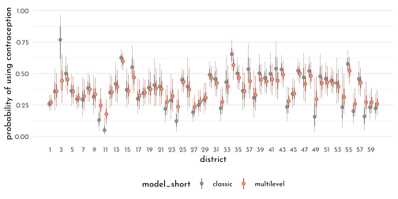
\(\rightarrow\) the model_bangladesh_multilevel regresses to the mean (eg. district no. 3)
H2
chapter12_models <- read_rds("envs/chapter12_models.rds")
data_trolley_list3 <- chapter12_models$data_trolley %>%
mutate(id_idx = as.integer(id)) %>%
dplyr::select(response, action, intention, contact, id_idx) %>%
as.list()model_trolley_predict_multi <- ulam(
flist = alist(
response ~ dordlogit( phi, cutpoints ),
phi <- alpha_bar + z_alpha[id_idx] * sigma_alpha +
beta_a * action + beta_c * contact + B_i * intention,
B_i <- beta_i + beta_ia * action + beta_ic * contact,
c(beta_a, beta_c, beta_i, beta_ia, beta_ic) ~ dnorm(0, 0.5),
cutpoints ~ dnorm(0, 1.5),
alpha_bar ~ dnorm(0, 1),
z_alpha[id_idx] ~ dnorm(0, 1),
sigma_alpha ~ dexp(1)
),
data = data_trolley_list3,
chains = 4,
cores = 4,
log_lik = TRUE
)
write_rds(model_trolley_predict_multi,
file = "brms/ulam_c13_model_trolley_predict_multi.rds")model_trolley_predict_multi <- read_rds("brms/ulam_c13_model_trolley_predict_multi.rds")precis(model_trolley_predict_multi) %>%
knit_precis()| param | mean | sd | 5.5% | 94.5% | n_eff | Rhat4 |
|---|---|---|---|---|---|---|
| beta_ic | -1.66 | 0.10 | -1.82 | -1.51 | 1513.39 | 1.00 |
| beta_ia | -0.55 | 0.08 | -0.68 | -0.42 | 1271.30 | 1.00 |
| beta_i | -0.39 | 0.06 | -0.48 | -0.29 | 1243.37 | 1.00 |
| beta_c | -0.46 | 0.07 | -0.57 | -0.34 | 1471.66 | 1.00 |
| beta_a | -0.65 | 0.06 | -0.74 | -0.57 | 1326.95 | 1.00 |
| alpha_bar | 0.78 | 0.56 | -0.10 | 1.69 | 1204.08 | 1.00 |
| sigma_alpha | 1.92 | 0.08 | 1.78 | 2.06 | 270.67 | 1.03 |
precis(chapter12_models$model_trolley_predict) %>%
knit_precis()| param | mean | sd | 5.5% | 94.5% | n_eff | Rhat4 |
|---|---|---|---|---|---|---|
| beta_ic | -1.24 | 0.10 | -1.39 | -1.08 | 1115.74 | 1 |
| beta_ia | -0.43 | 0.08 | -0.56 | -0.31 | 1266.84 | 1 |
| beta_i | -0.29 | 0.06 | -0.39 | -0.20 | 1097.48 | 1 |
| beta_c | -0.34 | 0.07 | -0.45 | -0.24 | 1174.36 | 1 |
| beta_a | -0.47 | 0.05 | -0.56 | -0.39 | 1232.07 | 1 |
compare(chapter12_models$model_trolley_predict,
model_trolley_predict_multi)#> WAIC SE dWAIC dSE
#> model_trolley_predict_multi 31055.82 179.48037 0.000 NA
#> chapter12_models$model_trolley_predict 36928.89 80.74662 5873.076 173.6475
#> pWAIC weight
#> model_trolley_predict_multi 356.03065 1
#> chapter12_models$model_trolley_predict 10.79849 0posterior_comparison <- tibble_precis(chapter12_models$model_trolley_predict) %>%
bind_rows(tibble_precis(model_trolley_predict_multi))
posterior_comparison %>%
ggplot(aes(y = rowname)) +
geom_vline(xintercept = 0, color = clr_dark, linetype = 3) +
geom_linerange(aes(xmin = `X5.5.`, xmax = `X94.5.`),
color = clr0dd) +
geom_point(aes(x = mean),
color = clr0dd, fill = clr0,
shape = 21, size = 1.5) +
facet_wrap(model ~ ., ncol = 1, scales = "free_y")+
labs(y = NULL)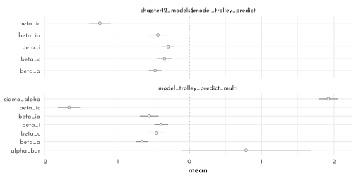
H3
data_trolley_list4 <- chapter12_models$data_trolley %>%
mutate(id_idx = as.integer(id),
story_idx = as.integer(story)) %>%
dplyr::select(response, action, intention, contact, id_idx, story_idx) %>%
as.list()model_trolley_predict_story <- ulam(
flist = alist(
response ~ dordlogit( phi, cutpoints ),
phi <- alpha_bar + z_alpha[id_idx] * sigma_alpha +
z_gamma[story_idx] * sigma_gamma +
beta_a * action + beta_c * contact + B_i * intention,
B_i <- beta_i + beta_ia * action + beta_ic * contact,
c(beta_a, beta_c, beta_i, beta_ia, beta_ic) ~ dnorm(0, 0.5),
cutpoints ~ dnorm(0, 1.5),
alpha_bar ~ dnorm(0, 1),
z_alpha[id_idx] ~ dnorm(0, 1),
sigma_alpha ~ dexp(1),
z_gamma[story_idx] ~ dnorm(0, 1),
sigma_gamma ~ dexp(1)
),
data = data_trolley_list4,
chains = 4,
cores = 4,
log_lik = TRUE
)
write_rds(model_trolley_predict_story,
file = "brms/ulam_c13_model_trolley_predict_story.rds")model_trolley_predict_story <- read_rds("brms/ulam_c13_model_trolley_predict_story.rds")compare(model_trolley_predict_story,
model_trolley_predict_multi)#> WAIC SE dWAIC dSE pWAIC
#> model_trolley_predict_story 30567.72 180.3282 0.0000 NA 366.6173
#> model_trolley_predict_multi 31055.82 179.4804 488.0974 42.62895 356.0306
#> weight
#> model_trolley_predict_story 1.000000e+00
#> model_trolley_predict_multi 1.025663e-106posterior_comparison <- tibble_precis(model_trolley_predict_story) %>%
bind_rows(tibble_precis(model_trolley_predict_multi))
posterior_comparison %>%
ggplot(aes(y = rowname)) +
geom_vline(xintercept = 0, color = clr_dark, linetype = 3) +
geom_linerange(aes(xmin = `X5.5.`, xmax = `X94.5.`),
color = clr0dd) +
geom_point(aes(x = mean),
color = clr0dd, fill = clr0,
shape = 21, size = 1.5) +
facet_wrap(model ~ ., ncol = 1, scales = "free_y")+
labs(y = NULL)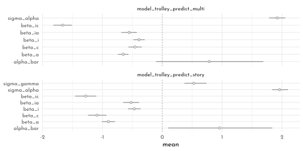
H4
data_frogs_list <- data_frogs %>%
mutate(pred_size_inter = str_c(pred, size, sep = "_") %>%
factor(),
across(c(pred, size, pred_size_inter),
as.integer,
.names = "{.col}_idx")) %>%
dplyr::select(density, surv, tank, pred_idx,
size_idx, pred_size_inter_idx) %>%
as.list()
model_frog_pred <- ulam(
flist = alist(
surv ~ dbinom( density, p ),
logit(p) <- alpha_bar +
z_tank[tank] * sigma_tank +
z_pred[pred_idx] * sigma_pred,
## adaptive priors
z_tank[tank] ~ dnorm( 0, 1 ),
z_pred[pred_idx] ~ dnorm( 0, 1 ),
## hyper-priors
alpha_bar ~ dnorm(0, 1.5),
sigma_tank ~ dexp(1),
sigma_pred ~ dexp(1),
gq> vector[tank]:alpha_tank <<- alpha_bar + z_tank * sigma_tank,
gq> vector[pred_idx]:alpha_pred <<- alpha_bar + z_pred * sigma_pred
),
data = data_frogs_list,
cores = 4,
chains = 4,
log_lik = TRUE
)
model_frog_size <- ulam(
flist = alist(
surv ~ dbinom( density, p ),
logit(p) <- alpha_bar +
z_tank[tank] * sigma_tank +
z_size[size_idx] * sigma_size,
## adaptive priors
z_tank[tank] ~ dnorm( 0, 1 ),
z_size[size_idx] ~ dnorm( 0, 1 ),
## hyper-priors
alpha_bar ~ dnorm(0, 1.5),
sigma_tank ~ dexp(1),
sigma_size ~ dexp(1),
gq> vector[tank]:alpha_tank <<- alpha_bar + z_tank * sigma_tank,
gq> vector[size_idx]:alpha_size <<- z_size * sigma_size
),
data = data_frogs_list,
cores = 4,
chains = 4,
log_lik = TRUE
)
model_frog_size_pred <- ulam(
flist = alist(
surv ~ dbinom( density, p ),
logit(p) <- alpha_bar +
z_tank[tank] * sigma_tank +
z_pred[pred_idx] * sigma_pred +
z_size[size_idx] * sigma_size,
## adaptive priors
z_tank[tank] ~ dnorm( 0, 1 ),
z_size[size_idx] ~ dnorm( 0, 1 ),
z_pred[pred_idx] ~ dnorm( 0, 1 ),
## hyper-priors
alpha_bar ~ dnorm(0, 1.5),
sigma_size ~ dexp(1),
sigma_tank ~ dexp(1),
sigma_pred ~ dexp(1),
gq> vector[tank]:alpha_tank <<- alpha_bar + z_tank * sigma_tank,
gq> vector[size_idx]:alpha_size <<- z_size * sigma_size,
gq> vector[pred_idx]:alpha_pred <<- z_pred * sigma_pred
),
data = data_frogs_list,
cores = 4,
chains = 4,
log_lik = TRUE
)
model_frog_size_pred_inter <- ulam(
flist = alist(
surv ~ dbinom( density, p ),
logit(p) <- alpha_bar +
z_tank[tank] * sigma_tank +
z_pred[pred_idx] * sigma_pred +
z_size[size_idx] * sigma_size +
z_inter[pred_size_inter_idx] * sigma_inter,
## adaptive priors
z_tank[tank] ~ dnorm( 0, 1 ),
z_size[size_idx] ~ dnorm( 0, 1 ),
z_pred[pred_idx] ~ dnorm( 0, 1 ),
z_inter[pred_size_inter_idx] ~ dnorm( 0, 1 ),
## hyper-priors
alpha_bar ~ dnorm(0, 1.5),
sigma_size ~ dexp(1),
sigma_tank ~ dexp(1),
sigma_pred ~ dexp(1),
sigma_inter ~ dexp(1),
gq> vector[tank]:alpha_tank <<- alpha_bar + z_tank * sigma_tank,
gq> vector[size_idx]:alpha_size <<- z_size * sigma_size,
gq> vector[pred_idx]:alpha_pred <<- z_pred * sigma_pred,
gq> vector[pred_size_inter_idx]:alpha_inter <<- z_inter * sigma_inter
),
data = data_frogs_list,
cores = 4,
chains = 4,
log_lik = TRUE
)compare(model_frog_pred,
model_frog_size,
model_frog_size_pred,
model_frog_size_pred_inter)#> WAIC SE dWAIC dSE pWAIC
#> model_frog_size_pred 199.4890 8.983376 0.0000000 NA 19.01785
#> model_frog_size_pred_inter 199.7571 9.286128 0.2681206 2.018589 19.08583
#> model_frog_pred 200.4490 9.387933 0.9599531 2.017005 19.70884
#> model_frog_size 201.8626 7.213050 2.3735980 5.750028 21.76818
#> weight
#> model_frog_size_pred 0.3573302
#> model_frog_size_pred_inter 0.3124986
#> model_frog_pred 0.2211152
#> model_frog_size 0.1090560tibble_precisposterior_comparison <- tibble_precis(model_frog_pred, depth = 2) %>%
bind_rows(tibble_precis(model_frog_size, depth = 2)) %>%
bind_rows(tibble_precis(model_frog_size_pred, depth = 2)) %>%
bind_rows(tibble_precis(model_frog_size_pred_inter, depth = 2)) %>%
mutate(model = str_remove(model, "model_frog_"))
level_cpt <- data_frogs_list %>% as_tibble() %>%
mutate(lab = glue("{pred_size_inter_idx}: ({levels(data_frogs$size)[size_idx]} | {levels(data_frogs$pred)[pred_idx]})")) %>%
dplyr::select(lab) %>%
distinct() %>%
.$lab %>% str_c(collapse = "; ") %>%
str_c("Interaction Levels: ",.)
posterior_comparison %>%
filter(grepl("sigma|alpha", rowname) & !grepl("tank", rowname)) %>%
ggplot(aes(y = model, color = model)) +
geom_vline(xintercept = 0, color = clr_dark, linetype = 3) +
geom_linerange(aes(xmin = `X5.5.`, xmax = `X94.5.`)#,
#color = clr0dd
) +
geom_point(aes(x = mean, color = model, fill = after_scale(clr_lighten(color))),
# color = clr0dd, fill = clr0,
shape = 21, size = 1.5) +
facet_wrap(rowname ~ .,# ncol = 1,
scales = "free_y",dir = "v") +
scale_color_manual(values = c(clr_dark, clr1, clr2, clr3), guide = 'none') +
labs(y = NULL, x = NULL, caption = level_cpt)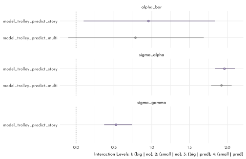
pair_model <- function(model, clr_current = clr_dark){
p <- extract.samples(model) %>%
data.frame() %>%
as_tibble() %>%
dplyr::select(contains("alpha_pred"),
contains("alpha_size"),
#contains("sigma")
sigma_tank#,
# contains("alpha_inter")
) %>%
set_names(x = ., nm = names(.) %>% str_remove(pattern = "alpha_")) %>%
ggpairs( lower = list(continuous = wrap(my_lower, col = clr_current, bins = 25)),
diag = list(continuous = wrap("densityDiag", fill = fll0,
color = clr_current,
fill = clr_alpha(clr_current),
adjust = .7)),
upper = list(continuous = wrap(my_upper , size = 4,
color = "black", family = fnt_sel)) ) +
theme(panel.border = element_rect(color = clr_dark,
fill = "transparent"))
ggmatrix_gtable(p)
}
cowplot::plot_grid(
cowplot::plot_grid(pair_model(model_frog_size, clr_dark),
pair_model(model_frog_pred, clr1), ncol = 1),
pair_model(model_frog_size_pred, clr2),
pair_model(model_frog_size_pred_inter, clr3),
nrow = 1, rel_widths = c(.75, 1, 1))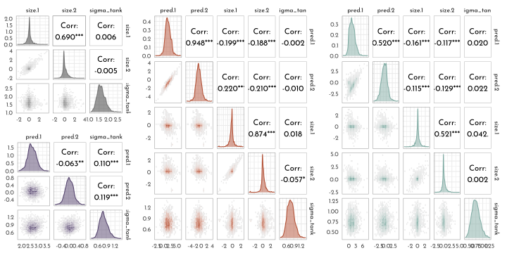
14.7 {brms} section
14.7.1 Multilevel Tadpoles
brms_c13_model_frog_single <- brm(
data = data_frogs,
family = binomial,
surv | trials(density) ~ 0 + factor(tank),
prior(normal(0, 1.5), class = b),
iter = 2000, warmup = 1000,
chains = 4, cores = 4,
seed = 42,
file = "brms/brms_c13_model_frog_single")
library(tidybayes)
fixef(brms_c13_model_frog_single) %>%
as_tibble() %>%
mutate(p = inv_logit_scaled(Estimate)) %>%
pivot_longer(Estimate:p) %>%
mutate(name = if_else(name == "p",
"expected survival probability",
"expected survival log-odds")) %>%
ggplot(aes(x = value, color = name)) +
stat_slab(slab_type = "pdf",
aes(fill_ramp = stat(cut_cdf_qi(cdf, .width = c(1, .95, 0.66)))),
color = clr0d, size = .5,
adjust = .75,
normalize = "xy",
trim = FALSE, n = 301) +
scale_colour_ramp_discrete(from = clr_dark, aesthetics = "fill_ramp", guide = "none")+
facet_wrap(~ name, scales = "free_x") +
scale_y_continuous(breaks = NULL) +
labs(title = "Tank-level intercepts from the no-pooling model",
subtitle = "Notice now inspecting the distributions of the posterior means can offer\ninsights you might not get if you looked at them one at a time",
y = "density", x = NULL)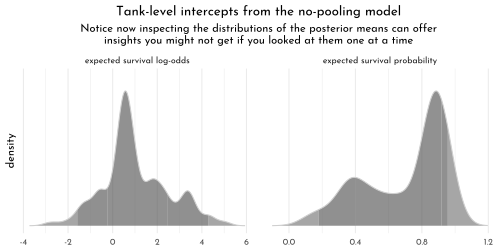
The syntax for the varying effects follows the lme4 style, (
<varying parameter(s)> | <grouping variable(s)>). In this case (1 | tank) indicates only the intercept,1, varies bytank. The extent to which parameters vary is controlled by the prior,prior(exponential(1), class = sd), which is parameterized in the standard deviation metric. Do note that last part. It’s common in multilevel software to model in the variance metric, instead.
brms_c13_model_frog_multi <- brm(
data = data_frogs,
family = binomial,
surv | trials(density) ~ 1 + (1 | tank),
prior = c(prior(normal(0, 1.5), class = Intercept), # bar alpha
prior(exponential(1), class = sd)), # sigma
iter = 5000, warmup = 1000,
chains = 4, cores = 4,
sample_prior = "yes",
seed = 42,
file = "brms/brms_c13_model_frog_multi")
brms_c13_model_frog_single <- add_criterion(brms_c13_model_frog_single, "waic")
brms_c13_model_frog_multi <- add_criterion(brms_c13_model_frog_multi, "waic")
(w <- loo_compare(brms_c13_model_frog_single,
brms_c13_model_frog_multi,
criterion = "waic"))\[\begin{bmatrix} 0 &0 \\-100.080713925655 &3.65719797675975 \\20.9937640102151 &0.806322918256096 \\200.16142785131 &7.3143959535195 \\-7.0516701236133 &1.85830328721338 \\-107.132384049268 &2.30310130945441 \\25.4020567497694 &1.27920271752106 \\214.264768098536 &4.60620261890881 \\ \end{bmatrix}\]
The
se_diffis small relative to theelpd_diff. If we convert the \(elpd\) difference to the WAIC metric, the message stays the same.
cbind(waic_diff = w[, 1] * -2,
se = w[, 2] * 2)\[\begin{bmatrix} 0 &0 \\14.1033402472266 &3.71660657442677 \\ \end{bmatrix}\]
model_weights(brms_c13_model_frog_single,
brms_c13_model_frog_multi,
weights = "waic") %>%
round(digits = 2)#> brms_c13_model_frog_single brms_c13_model_frog_multi
#> 0 1…the number of effective parameters for the two models. This, recall, is listed in the column for
p_waic.
w[, "p_waic"]#> brms_c13_model_frog_multi brms_c13_model_frog_single
#> 20.99376 25.40206brms_frogs_posterior <- as_draws_df(brms_c13_model_frog_multi) %>%
as_tibble()
posterior_median <- coef(brms_c13_model_frog_multi,
robust = TRUE)$tank[, , ] %>%
data.frame() %>%
bind_cols(data_frogs, .) %>%
mutate(posterior_median = inv_logit_scaled(Estimate))
posterior_median %>%
ggplot(aes(x = tank)) +
geom_hline(yintercept = inv_logit_scaled(median(brms_frogs_posterior$b_Intercept)),
linetype = 3, size = .5, color = clr_dark) +
geom_point(aes(y = propsurv),
color = clr_dark, shape = 19, size = 2) +
geom_point(aes(y = posterior_median),
shape = 1, size = 2) +
facet_wrap(density ~ ., labeller = label_both) +
scale_x_continuous(breaks = c(1, 16, 32, 48)) +
scale_y_continuous(breaks = 0:5 / 5, limits = c(0, 1)) +
labs(title = "Multilevel shrinkage!",
subtitle = "The empirical proportions are in gray while the model-implied proportions are\nthe black circles. The dashed line is the model-implied average survival proportion.") +
theme(panel.grid.major = element_blank(),
panel.border = element_rect(fill = "transparent",
color = clr0d))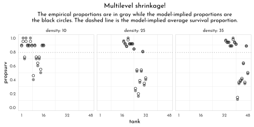
p1 <- brms_frogs_posterior %>%
mutate(iter = 1:n()) %>%
slice_sample(n = 100) %>%
expand(nesting(iter, b_Intercept, sd_tank__Intercept),
x = seq(from = -4, to = 5, length.out = 100)) %>%
mutate(density = dnorm(x, mean = b_Intercept, sd = sd_tank__Intercept)) %>%
ggplot(aes(x = x, y = density, group = iter)) +
geom_line(alpha = .2, color = clr_dark) +
scale_y_continuous(NULL, breaks = NULL) +
labs(title = "Population survival distribution",
subtitle = "log-odds scale",
x = "log-ods survival") +
coord_cartesian(xlim = c(-3, 4))
p2 <- brms_frogs_posterior %>%
slice_sample(n = 8000, replace = TRUE) %>%
mutate(sim_tanks = rnorm(n(), mean = b_Intercept, sd = sd_tank__Intercept)) %>%
ggplot(aes(x = inv_logit_scaled(sim_tanks))) +
geom_density(size = .5, fill = fll0, color = clr0dd, adjust = 0.1) +
scale_y_continuous(NULL, breaks = NULL) +
labs(title = "Probability of survival",
subtitle = "transformed by the inverse-logit function",
x = "p")
p1 + p2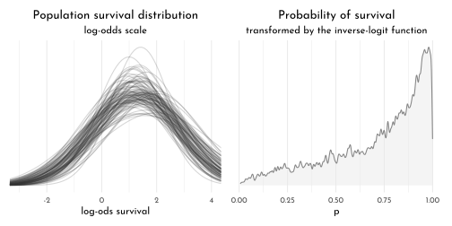
Priors for variance components
brms_c13_model_frog_multi_update <- update(
brms_c13_model_frog_multi,
prior = c(prior(normal(0, 1.5), class = Intercept),
prior(normal(0, 1), class = sd)),
iter = 5000, warmup = 1000,
chains = 4, cores = 4,
sample_prior = "yes",
seed = 42,
file = "brms/brms_c13_model_frog_multi_update")McElreath mentioned how one might set a lower bound at zero for the half-Normal prior when using
rethinking::ulam(). There’s no need to do so when usingbrms::brm(). The lower bounds for priors of class = sd are already set to zero by default.
If you’re curious how the exponential and half-Normal priors compare to one another and to their posteriors, you might just plot.
tibble(`prior_Exponential(1)` = prior_draws(brms_c13_model_frog_multi) %>% pull(sd_tank),
`posterior_Exponential(1)` = as_draws_df(brms_c13_model_frog_multi) %>% pull(sd_tank__Intercept),
`prior_Half-Normal(0, 1)` = prior_draws(brms_c13_model_frog_multi_update) %>% pull(sd_tank),
`posterior_Half-Normal(0, 1)` = as_draws_df(brms_c13_model_frog_multi_update) %>% pull(sd_tank__Intercept)) %>%
pivot_longer(everything(),
names_sep = "_",
names_to = c("distribution", "prior")) %>%
mutate(distribution = factor(distribution, levels = c("prior", "posterior"))) %>%
ggplot(aes(x = value, color = distribution)) +
geom_density(size = .5, adjust = 0.5,
aes(fill = after_scale(clr_alpha(color)))) +
scale_color_manual(NULL, values = c(clr0d, clr_dark)) +
scale_y_continuous(NULL, breaks = NULL) +
labs(subtitle = "Hierarchical sigma parameter") +
coord_cartesian(xlim = c(0, 4)) +
facet_wrap(~ prior) +
theme(legend.position = "bottom",
axis.title.x = element_blank(),
panel.border = element_rect(fill = "transparent",
color = clr0d))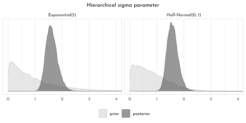
14.7.2 Varying Effects and the Underfitting/Overfitting Trade-Off
Compute the partial-pooling estimates
The multi-level partial-pooling model:
brms_c13_model_sim_partial <- brm(
data = data_sim,
family = binomial,
surv_i | trials(n_i) ~ 1 + ( 1 | pond_idx ),
prior = c(prior(normal(0, 1.5), class = Intercept),
prior(exponential(1), class = sd)),
iter = 2000, warmup = 1000,
chains = 4, cores = 4,
seed = 42,
file = "brms/brms_c13_model_sim_partial")brms_sim_posterior <- coef(brms_c13_model_sim_partial)$pond[, , ] %>%
data.frame() %>%
transmute(p_partpool = inv_logit_scaled(Estimate)) %>%
bind_cols(data_sim, .) %>%
mutate(p_true = inv_logit_scaled(true_alpha),
no_pool_error = abs(p_no_pool - p_true),
part_pool_error = abs(p_partpool - p_true))
dfline <- brms_sim_posterior %>%
select(n_i, no_pool_error:part_pool_error) %>%
pivot_longer(-n_i) %>%
group_by(name, n_i) %>%
summarise(mean_error = mean(value)) %>%
mutate(x = c( 1, 16, 31, 46),
xend = c(15, 30, 45, 60))
brms_sim_posterior %>%
ggplot(aes(x = pond_idx)) +
geom_point(aes(y = no_pool_error),
shape = 19, color = clr0dd, size = 2) +
geom_point(aes(y = part_pool_error),
shape = 1, size = 2) +
geom_segment(data = dfline,
aes(x = x, xend = xend,
y = mean_error, yend = mean_error),
color = rep(c(clr0dd, clr_dark), each = 4),
linetype = rep(c(1,3), each = 4)) +
scale_x_continuous(breaks = c(1, 10, 20, 30, 40, 50, 60)) +
facet_wrap(n_i ~ . , scales = "free_x", nrow = 1, labeller = label_both) +
labs(title = "Estimate error by model type",
subtitle = "The horizontal axis displays pond number. The vertical axis measures the absolute error\n in the predicted proportion of survivors, compared to the true value used in the simulation.\nThe higher the point, the worse the estimate. No-pooling shown in gray, Partial pooling\nshown in black. The gray and dashed black lines show the average error for each\nkind of estimate, across each initial density of tadpoles (pond size).",
y = "absolute error") +
theme(panel.grid.major = element_blank(),
plot.subtitle = element_text(size = 10),
panel.border = element_rect(fill = "transparent",
color = clr0d))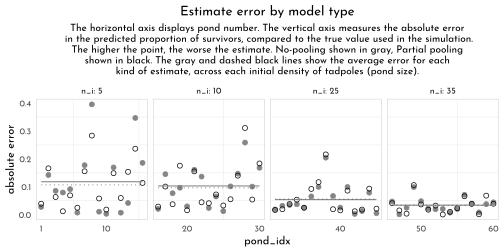
If you wanted to quantify the difference in simple summaries, you might execute something like this.
brms_sim_posterior %>%
select(n_i, no_pool_error:part_pool_error) %>%
pivot_longer(-n_i) %>%
group_by(name) %>%
summarise(mean_error = mean(value) %>% round(digits = 3),
median_error = median(value) %>% round(digits = 3))#> # A tibble: 2 × 3
#> name mean_error median_error
#> <chr> <dbl> <dbl>
#> 1 no_pool_error 0.077 0.046
#> 2 part_pool_error 0.073 0.043Repeating the pond simulation
Within the brms workflow, we can reuse a compiled model with
update(). But first, we’ll simulate new data.
set.seed(23)
alpha_bar <- 1.5
sigma <- 1.5
n_ponds <- 60
pond_levels <- c("tiny", "small", "medium", "large")
data_sim_new <- tibble(pond_idx = 1:n_ponds,
n_i = rep(c(5, 10, 25, 35), each = 15),
pond_size = rep(pond_levels, each = 15) %>%
factor(levels = pond_levels),
true_alpha = rnorm(n = n_ponds, mean = alpha_bar, sd = sigma),
surv_i = rbinom(n_ponds, prob = logistic(true_alpha), size = n_i),
p_true = inv_logit(true_alpha),
p_no_pool = surv_i / n_i)
brms_c13_model_sim_partial_new <- update(
brms_c13_model_sim_partial,
newdata = data_sim_new,
chains = 4, cores = 4,
seed = 42,
file = "brms/brms_c13_model_sim_partial_new")Why not plot the first simulation versus the second one?
bind_rows(as_draws_df(brms_c13_model_sim_partial),
as_draws_df(brms_c13_model_sim_partial_new)) %>%
mutate(model = rep(c("original_data", "new_data"), each = n() / 2)) %>%
ggplot(aes(x = b_Intercept,
y = sd_pond_idx__Intercept)) +
stat_density_2d(geom = "raster",
aes(fill = stat(density)),
contour = FALSE,
n = 200,
alpha = .9) +
geom_density2d(color = rgb(1,1,1,.75), size = .1) +
geom_vline(xintercept = alpha_bar,
color = clr_current, linetype = 3) +
geom_hline(yintercept = sigma,
color = clr_current, linetype = 3) +
scale_fill_gradient(low = clr0,
high = clr_dark) +
ggtitle("Our simulation posteriors contrast a bit",
subtitle = "alpha is on the x and sigma is on the y, both in log-odds.\nThe dotted lines intersect at the true values.") +
coord_cartesian(xlim = c(.7, 2),
ylim = c(.9, 1.9), expand = 0) +
theme(legend.position = "none",
panel.grid.major = element_blank()) +
facet_wrap(~ model, ncol = 2)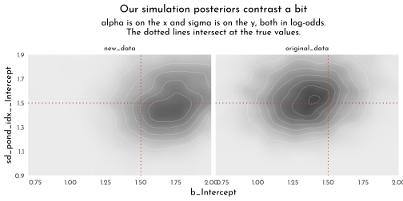
If you’d like the
stanfitportion of yourbrm()object, subset with$fit.
brms_c13_model_sim_partial$fit@stanmodel#> S4 class stanmodel 'bbd5b3b656d9a26bdac13a9dd363a8cd' coded as follows:
#> // generated with brms 2.16.1
#> functions {
#> }
#> data {
#> int<lower=1> N; // total number of observations
#> int Y[N]; // response variable
#> int trials[N]; // number of trials
#> // data for group-level effects of ID 1
#> int<lower=1> N_1; // number of grouping levels
#> int<lower=1> M_1; // number of coefficients per level
#> int<lower=1> J_1[N]; // grouping indicator per observation
#> // group-level predictor values
#> vector[N] Z_1_1;
#> int prior_only; // should the likelihood be ignored?
#> }
#> transformed data {
#> }
#> parameters {
#> real Intercept; // temporary intercept for centered predictors
#> vector<lower=0>[M_1] sd_1; // group-level standard deviations
#> vector[N_1] z_1[M_1]; // standardized group-level effects
#> }
#> transformed parameters {
#> vector[N_1] r_1_1; // actual group-level effects
#> r_1_1 = (sd_1[1] * (z_1[1]));
#> }
#> model {
#> // likelihood including constants
#> if (!prior_only) {
#> // initialize linear predictor term
#> vector[N] mu = Intercept + rep_vector(0.0, N);
#> for (n in 1:N) {
#> // add more terms to the linear predictor
#> mu[n] += r_1_1[J_1[n]] * Z_1_1[n];
#> }
#> target += binomial_logit_lpmf(Y | trials, mu);
#> }
#> // priors including constants
#> target += normal_lpdf(Intercept | 0, 1.5);
#> target += exponential_lpdf(sd_1 | 1);
#> target += std_normal_lpdf(z_1[1]);
#> }
#> generated quantities {
#> // actual population-level intercept
#> real b_Intercept = Intercept;
#> }
#> 14.7.3 More than one Type of Cluster
⚠️ WARNING ⚠️ I am so sorry, but we are about to head straight into a load of confusion. If you follow along linearly in the text, we won’t have the language to parse this all out until [later] In short, our difficulties will have to do with what are called the centered and the non-centered parameterizations for multilevel models. For the next several models in the text, McElreath used the centered parameterization. As we’ll learn [later], this often causes problems when you use Stan to fit your multilevel models. Happily, the solution to those problems is often the non-centered parameterization, which is well known among the Stan team. This issue is so well known, in fact, that Bürkner only supports the non-centered parameterization with brms (see here). To my knowledge, there is no easy way around this.
Even when using the non-centered parameterization, McElreath’s m13.4 is a bit of an odd model to translate into brms syntax. To my knowledge, it can’t be done with conventional syntax. But we can fit the model with careful use of the non-linear syntax, which might look like this.
data_chimp_brms <- data_chimp %>%
dplyr::select(pulled_left, actor, block, treatment) %>%
mutate(across(actor:treatment, factor))
brms_c13_model_chimp_multicluster <- brm(
data = data_chimp_brms,
family = binomial,
bf(pulled_left | trials(1) ~ alpha + beta,
alpha ~ 1 + (1 | actor) + (1 | block),
beta ~ 0 + treatment,
nl = TRUE),
prior = c(prior(normal(0, 0.5), nlpar = beta),
prior(normal(0, 1.5), class = b, coef = Intercept, nlpar = alpha),
prior(exponential(1), class = sd, group = actor, nlpar = alpha),
prior(exponential(1), class = sd, group = block, nlpar = alpha)),
iter = 2000, warmup = 1000,
chains = 4, cores = 4,
seed = 42,
file = "brms/brms_c13_model_chimp_multicluster")The
beta ~ 0 + treatmentpart of the formula is our expression of what we wrote above as \(\beta_{treatment[i]}\). There’s a lot going on with thealpha ~ 1 + (1 | actor) + (1 | block)part of the formula. The initial1outside of the parenthesis is \(\bar{\alpha}\). The(1 | actor)and(1 | block)parts correspond to \(z_{actor[i]} \sigma_{\alpha}\) and \(x_{block[i]} \sigma_{\gamma}\), respectively.
chimp_posterior <- as_draws_df(brms_c13_model_chimp_multicluster,
add_chain = TRUE) %>%
as_tibble() %>%
mutate(iter = .iteration,
chain = .chain)
clr_chains <- function(n = 4, alpha = .7, col_start = clr0dd,col = clr2){scales::colour_ramp(colors = c(col_start, col))(seq(0,1,length.out = n))%>% clr_lighten(.2) %>% clr_alpha(alpha = alpha)}
library(bayesplot)
chimp_posterior %>%
mcmc_trace(pars = vars(-iter, -lp__),
facet_args = list(ncol = 4),
size = .15) +
scale_color_manual(values = clr_chains(col_start = "black") ) +
theme(legend.position = "bottom")
When you use the
(1 | <group>)syntax withinbrm(), the group-specific parameters are not shown withprint(). You only get the hierarchical \(\sigma_{<group>}\) summaries, shown here as the two rows forsd(a_Intercept). However, you can get a summary of all the parameters with theposterior_summary()function.
posterior_summary(brms_c13_model_chimp_multicluster) %>%
round(digits = 2)\[\begin{bmatrix} 0.6 &0.73 &-0.82 &2.04 &-0.13 &0.3 &-0.71 &0.48 &0.4 &0.3 &-0.19 &1.01 &-0.47 &0.3 &-1.06 &0.11 &0.28 &0.3 &-0.3 &0.89 &2.02 \\0.67 &1.08 &3.59 &0.2 &0.17 &0.01 &0.64 &-0.96 &0.74 &-2.44 &0.52 &4.07 &1.4 &1.93 &7.37 &-1.26 &0.73 &-2.74 &0.19 &-1.25 &0.73 \\-2.71 &0.17 &-0.96 &0.73 &-2.42 &0.47 &-0.01 &0.74 &-1.48 &1.42 &1.52 &0.78 &0 &3.09 &-0.17 &0.22 &-0.72 &0.13 &0.04 &0.18 &-0.33 \\0.45 &0.05 &0.18 &-0.3 &0.48 &0.01 &0.18 &-0.38 &0.4 &-0.03 &0.18 &-0.43 &0.32 &0.11 &0.19 &-0.2 &0.59 &-286.93 &3.9 &-295.54 &-280.49 \\ \end{bmatrix}\]
color_scheme_set(
scales::colour_ramp(colors = c( "white",
str_sub(clr_dark, 1, 7)))(seq(.4,1, length.out = 6))
)
p1 <- mcmc_plot(brms_c13_model_chimp_multicluster,
variable = c("^r_.*", "^b_.*", "^sd_.*"),
regex = TRUE,
outer_size = 0.2,
inner_size = 1,
point_size = 2) +
theme(axis.text.y = element_text(hjust = 0))alternative version (d.i.y.)
p2 <- chimp_posterior %>%
pivot_longer(-(lp__:chain)) %>%
ggplot(aes(x = value, y = name)) +
stat_pointinterval(point_interval = mean_qi,
.width = c(.89, .5),
shape = 21,
point_size = 2,
point_fill = clr0,
color = clr0dd)+
theme(axis.title = element_blank())
p1 + p2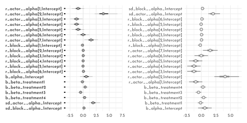
Comparing the group-level sigma parameters
chimp_posterior %>%
pivot_longer(starts_with("sd")) %>%
ggplot(aes(x = value, color = name)) +
geom_density(size = .5,
aes(fill = after_scale(clr_alpha(color))),
adjust = .5) +
annotate(geom = "text", x = 0.67, y = 2, label = "Block", color = clr_dark) +
annotate(geom = "text", x = 2.725, y = 0.5, label = "Actor", color = clr0d) +
scale_color_manual(values = c(clr0d, clr_dark), guide = "none") +
scale_y_continuous(breaks = NULL) +
labs(subtitle = "sigma_group", x = NULL, y = "density") +
coord_cartesian(xlim = c(0, 4))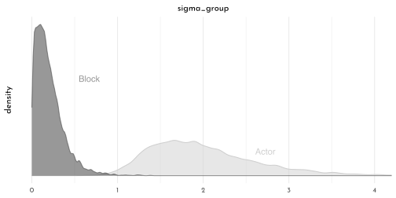
Since both the coefficient plots and the density plots indicate there is much more variability among the
actorparameters than in theblockparameters, we might fit a model that ignores the variation among the levels ofblock.
brms_c13_model_chimp_no_block <- brm(
data = data_chimp_brms,
family = binomial,
bf(pulled_left | trials(1) ~ alpha + beta,
alpha ~ 1 + (1 | actor),
beta ~ 0 + treatment,
nl = TRUE),
prior = c(prior(normal(0, 0.5), nlpar = beta),
prior(normal(0, 1.5), class = b, coef = Intercept, nlpar = alpha),
prior(exponential(1), class = sd, group = actor, nlpar = alpha)),
iter = 2000, warmup = 1000,
chains = 4, cores = 4,
seed = 42,
file = "brms/brms_c13_model_chimp_no_block")
brms_c13_model_chimp_multicluster <- add_criterion(brms_c13_model_chimp_multicluster, "waic")
brms_c13_model_chimp_no_block <- add_criterion(brms_c13_model_chimp_no_block, "waic")
loo_compare(brms_c13_model_chimp_multicluster,
brms_c13_model_chimp_no_block,
criterion = "waic") %>%
print(simplify = FALSE)#> elpd_diff se_diff elpd_waic se_elpd_waic
#> brms_c13_model_chimp_no_block 0.0 0.0 -265.6 9.6
#> brms_c13_model_chimp_multicluster -0.4 0.8 -266.0 9.7
#> p_waic se_p_waic waic se_waic
#> brms_c13_model_chimp_no_block 8.6 0.4 531.3 19.2
#> brms_c13_model_chimp_multicluster 10.5 0.5 532.1 19.4model_weights(brms_c13_model_chimp_multicluster,
brms_c13_model_chimp_no_block,
weights = "waic") %>%
round(digits = 2)#> brms_c13_model_chimp_multicluster brms_c13_model_chimp_no_block
#> 0.4 0.6Even more clusters
brms_c13_model_chimp_treatment <- brm(
data = data_chimp_brms,
family = binomial,
pulled_left | trials(1) ~ 1 + (1 | actor) + (1 | block) + (1 | treatment),
prior = c(prior(normal(0, 1.5), class = Intercept),
prior(exponential(1), class = sd)),
iter = 2000, warmup = 1000,
chains = 4, cores = 4,
seed = 42,
file = "brms/brms_c13_model_chimp_treatment")
brms_chimp_posterior <- as_draws_df(brms_c13_model_chimp_treatment)
brms_chimp_posterior %>%
pivot_longer(starts_with("sd")) %>%
mutate(group = str_remove(name, "sd_") %>% str_remove(., "__Intercept")) %>%
mutate(parameter = str_c("sigma[", group,"]")) %>%
ggplot(aes(x = value, y = parameter)) +
stat_halfeye(.width = .95, size = 1, fill = clr0d, adjust = 0.1) +
labs(subtitle = "The variation among treatment levels is small, but the\nvariation among the levels of block is still the smallest.") +
coord_cartesian(ylim = c(1.5, 3)) +
theme(axis.text.y = element_text(hjust = 0),
axis.title = element_blank())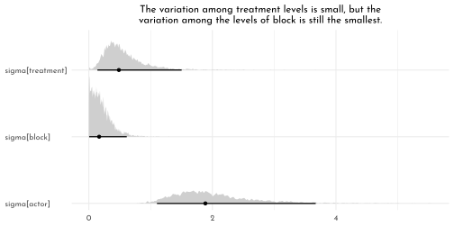
brms_c13_model_chimp_treatment <- add_criterion(brms_c13_model_chimp_treatment, "waic")
loo_compare(brms_c13_model_chimp_multicluster,
brms_c13_model_chimp_no_block,
brms_c13_model_chimp_treatment,
criterion = "waic") %>%
print(simplify = FALSE)#> elpd_diff se_diff elpd_waic se_elpd_waic
#> brms_c13_model_chimp_no_block 0.0 0.0 -265.6 9.6
#> brms_c13_model_chimp_multicluster -0.4 0.8 -266.0 9.7
#> brms_c13_model_chimp_treatment -0.9 0.8 -266.6 9.6
#> p_waic se_p_waic waic se_waic
#> brms_c13_model_chimp_no_block 8.6 0.4 531.3 19.2
#> brms_c13_model_chimp_multicluster 10.5 0.5 532.1 19.4
#> brms_c13_model_chimp_treatment 10.8 0.5 533.1 19.2model_weights(brms_c13_model_chimp_multicluster,
brms_c13_model_chimp_no_block,
brms_c13_model_chimp_treatment,
weights = "loo") %>%
round(digits = 2)#> brms_c13_model_chimp_multicluster brms_c13_model_chimp_no_block
#> 0.32 0.49
#> brms_c13_model_chimp_treatment
#> 0.1914.7.4 Divergent Transitions and Non-Centered Priors
Non-centered chimpanzees
Because we only fit this model using the non-centered parameterization, we won’t be able to fully reproduce McElreath’s Figure 13.6. But we can still plot our effective sample sizes. Recall that unlike the way rethinking only reports
n_eff, brms now reports bothbulk_essandtail_ess(see Vehtari, Gelman, et al., 2019). At the moment, brms does not offer a convenience function that allows users to collect those values in a data frame. However you can do so with help from the posterior package (Bürkner et al., 2020), which has not made its way to CRAN, yet, but can be downloaded directly from GitHub.
as_draws_df(brms_c13_model_chimp_multicluster) %>%
summarise_draws() %>%
ggplot(aes(x = ess_bulk, y = ess_tail)) +
geom_abline(linetype = 3, color = clr_dark) +
geom_point(color = clr0dd, fill = clr0,
size = 2, shape = 21) +
xlim(0, 4700) +
ylim(0, 4700) +
ggtitle("Effective sample size summaries for b13.4",
subtitle = "ess_bulk is on the x and ess_tail is on the y") +
theme(plot.subtitle = element_text(size = 10),
plot.title = element_text(size = 11.5),
plot.title.position = "plot")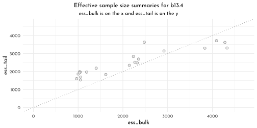
14.7.5 Multilevel Posterior Predictions
Posterior prediction for same clusters
treatment_levels <- c("R|N", "L|N", "R|P", "L|P")
new_chimp <- data_chimp %>%
distinct(treatment) %>%
mutate(actor = chimp,
block = 1L)
chimp_2_fit <- fitted(brms_c13_model_chimp_multicluster,
newdata = new_chimp) %>%
as_tibble() %>%
bind_cols(new_chimp,.)
chimp_2_data <- data_chimp %>%
filter(actor == chimp) %>%
group_by(treatment) %>%
summarise(prob = mean(pulled_left)) %>%
ungroup()
p1 <- chimp_2_fit %>%
ggplot(aes(x = treatment, y = Estimate)) +
geom_smooth(stat = 'identity',
aes(ymin = Q2.5, ymax = Q97.5),
fill = clr0dd, color = clr0dd, size = .5) +
geom_point(data = chimp_2_data,
aes(y = prob),
color = clr0dd , fill = clr0, shape = 21) +
ggtitle("Chimp #2",
subtitle = "The posterior mean and 95%\nintervals are the blue line\nand orange band, respectively.\nThe empirical means are\nthe charcoal dots.") +
coord_cartesian(ylim = c(.75, 1))
p2 <- (brms_chimp_posterior_multi <- as_draws_df(brms_c13_model_chimp_multicluster) %>%
as_tibble()) %>%
transmute(actor_5 = `r_actor__alpha[5,Intercept]`) %>%
ggplot(aes(x = actor_5)) +
geom_density(size = .5, color = clr0dd, fill = fll0) +
scale_y_continuous(breaks = NULL) +
ggtitle("Chimp #5's density")
chimp_5_fit <- brms_chimp_posterior_multi %>%
pivot_longer(b_beta_treatment1:b_beta_treatment4) %>%
mutate(fitted = inv_logit_scaled(b_alpha_Intercept + value +
`r_actor__alpha[1,Intercept]` +
`r_block__alpha[1,Intercept]`),
treatment = treatment_levels[str_sub(name, -1,-1) %>% as.integer()] %>%
factor(levels = treatment_levels)) %>%
select(name:treatment) %>%
group_by(treatment) %>%
tidybayes::mean_qi(fitted)
chimp_5_data <- data_chimp %>%
filter(actor == 5) %>%
group_by(treatment) %>%
summarise(prob = mean(pulled_left)) %>%
ungroup() %>%
mutate(treatment = treatment_levels[treatment] %>%
factor(levels = treatment_levels))
p3 <- chimp_5_fit %>%
ggplot(aes(x = treatment, y = fitted)) +
geom_smooth(stat = 'identity',
aes(ymin = .lower, ymax = .upper, group = 1),
fill = clr0dd, color = clr0dd, size = .5) +
geom_point(data = chimp_5_data,
aes(y = prob),
color = clr0dd , fill = clr0, shape = 21) +
ggtitle("Chimp #5",
subtitle = "This plot is like the last except\nwe did more by hand.") +
coord_cartesian(ylim = 0:1)
p1 + p2 + p3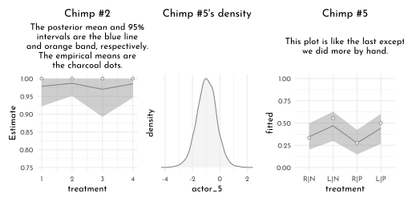
Posterior prediction for new clusters
chimp_mean_fitted <- brms_chimp_posterior_multi %>%
pivot_longer(b_beta_treatment1:b_beta_treatment4) %>%
mutate(fitted = inv_logit_scaled(b_alpha_Intercept + value)) %>%
mutate(treatment = treatment_levels[str_sub(name, -1,-1) %>% as.integer()] %>%
factor(levels = treatment_levels)) %>%
select(name:treatment) %>%
group_by(treatment) %>%
# note we're using 80% intervals
mean_qi(fitted, .width = .89)
p1 <- chimp_mean_fitted %>%
ggplot(aes(x = treatment, y = fitted, group = 1)) +
geom_smooth(stat = 'identity',
aes(ymin = .lower, ymax = .upper, group = 1),
fill = clr0dd, color = clr0dd, size = .5)+
labs(subtitle = "Average actor") +
coord_cartesian(ylim = 0:1)
chimp_marginal_fitted <- brms_chimp_posterior_multi %>%
# simulated chimpanzees
mutate(a_sim = rnorm(n(), mean = b_alpha_Intercept, sd = sd_actor__alpha_Intercept)) %>%
pivot_longer(b_beta_treatment1:b_beta_treatment4) %>%
mutate(fitted = inv_logit_scaled(a_sim + value),
treatment = treatment_levels[str_sub(name, -1,-1) %>% as.integer()] %>%
factor(levels = treatment_levels)) %>%
group_by(treatment) %>%
# note we're using 80% intervals
mean_qi(fitted, .width = .8)
p2 <- chimp_marginal_fitted %>%
ggplot(aes(x = treatment, y = fitted, group = 1)) +
geom_smooth(stat = 'identity',
aes(ymin = .lower, ymax = .upper, group = 1),
fill = clr0dd, color = clr0dd, size = .5)+
labs(subtitle = "Marginal of actor") +
coord_cartesian(ylim = 0:1)
n_chimps <- 100
set.seed(42)
chimp_100_random_fitted <- brms_chimp_posterior_multi %>%
mutate(iter = 1:n()) %>%
slice_sample(n = n_chimps) %>%
# simulated chimpanzees
mutate(a_sim = rnorm(n(), mean = b_alpha_Intercept, sd = sd_actor__alpha_Intercept)) %>%
pivot_longer(b_beta_treatment1:b_beta_treatment4) %>%
mutate(fitted = inv_logit_scaled(a_sim + value),
treatment = treatment_levels[str_sub(name, -1,-1) %>% as.integer()] %>%
factor(levels = treatment_levels)) %>%
select(iter:treatment)
p3 <- chimp_100_random_fitted %>%
ggplot(aes(x = treatment, y = fitted, group = iter)) +
geom_line(alpha = .4, color = clr0dd) +
labs(subtitle = "100 simulated actors") +
coord_cartesian(ylim = 0:1)
p1 + p2 + p3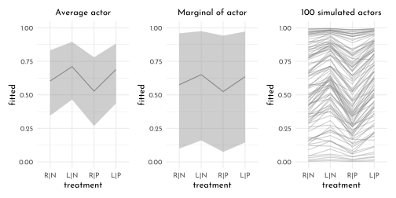
Let’s use fitted() this time (alternative approach for new clusters)
new_chimp_treatment <- distinct(data_chimp, treatment)
chimp_mean_fitted2 <- fitted(brms_c13_model_chimp_multicluster,
newdata = new_chimp_treatment,
re_formula = NA,
probs = c(.1, .9)) %>%
as_tibble() %>%
bind_cols(new_chimp_treatment, .) %>%
mutate(treatment = treatment_levels[treatment] %>%
factor(levels = treatment_levels))
p4 <- chimp_mean_fitted2 %>%
ggplot(aes(x = treatment, y = Estimate, group = 1)) +
geom_smooth(stat = 'identity',
aes(ymin = Q10, ymax = Q90),
fill = fll_current(), color = clr_current, size = .5) +
labs(subtitle = "Average actor") +
coord_cartesian(ylim = 0:1)
chimp_marginal_fitted2 <- fitted(brms_c13_model_chimp_multicluster,
newdata = new_chimp_treatment,
probs = c(.1, .9),
allow_new_levels = T,
sample_new_levels = "gaussian") %>%
as_tibble() %>%
bind_cols(new_chimp_treatment,.) %>%
mutate(treatment = treatment_levels[treatment] %>%
factor(levels = treatment_levels))
p5 <- chimp_marginal_fitted2 %>%
ggplot(aes(x = treatment, y = Estimate, group = 1)) +
geom_smooth(stat = 'identity',
aes(ymin = Q10, ymax = Q90),
fill = fll_current(), color = clr_current, size = .5) +
labs(subtitle = "Marginal of actor") +
coord_cartesian(ylim = 0:1)
new_chimp_random <- new_chimp %>%
# define 100 new actors
expand(actor = str_c("new", 1:n_chimps),
treatment) %>%
# this adds a row number, which will come in handy, later
mutate(row = 1:n())
set.seed(42)
chimp_100_random_fitted2 <- fitted(brms_c13_model_chimp_multicluster,
newdata = new_chimp_random,
allow_new_levels = TRUE,
sample_new_levels = "gaussian",
summary = FALSE,
ndraws = n_chimps)
p6 <- chimp_100_random_fitted2 %>%
as_tibble() %>%
# name the columns by the `row` values in `nd`
set_names(pull(new_chimp_random, row)) %>%
# add an iteration index
mutate(iter = 1:n()) %>%
# make it long
pivot_longer(-iter, names_to = "row") %>%
mutate(row = as.integer(row)) %>%
# add the new data
left_join(new_chimp_random, by = "row") %>%
# extract the numbers from the names of the new actors
mutate(actor_number = str_extract(actor, "\\d+") %>% as.integer()) %>%
# only keep the posterior iterations that match the `actor_number` values
filter(actor_number == iter) %>%
# add the `treatment` labels
mutate(treatment = treatment_levels[treatment] %>%
factor(levels = treatment_levels)) %>%
ggplot(aes(x = treatment, y = value, group = actor)) +
geom_line(alpha = .4, color = clr_current) +
labs(subtitle = "100 simulated actors")
p4 + p5 + p6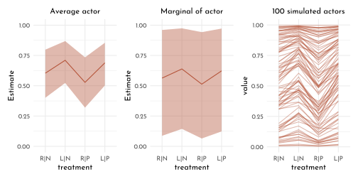
Post-stratification
If you have estimates \(p_{i}\) for each relevant demographic category \(i\), the post-stratified prediction for the whole population just re-weights these estimates using the number of individuals \(N_{i}\) in each category with the formula
\[\frac{\sum_{i}N_{i}p_{i}}{\sum_{i}N_{i}}\]
Within the multilevel context, this is called multilevel regression and post-stratification (MRP, pronounced “Mister P”).
14.7.6 Bonus: Post-stratification in an example
Meet the data
load("data/mrp_data_ch13.rds")
data_names <- d
data_cell_counts <- cell_counts
rm(d, cell_counts)data_cell_counts %>%
ggplot(aes(x = n)) +
geom_histogram(binwidth = 2e3, fill = fll0, color = clr0d) +
scale_x_continuous(breaks = 0:3 * 1e5,
labels = function(x){if_else(x == 0,
as.character(x),
str_c(1e-3 * x, "K"))})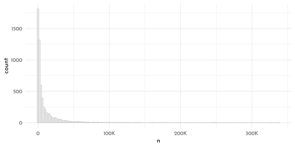
Settle the MR part of MRP
set.seed(42)
tibble(n = rnorm(1e6, -1, 1)) %>%
mutate(p = inv_logit_scaled(n)) %>%
ggplot(aes(x = p)) +
geom_density(color = clr0dd, fill = fll0) +
scale_y_continuous(breaks = NULL)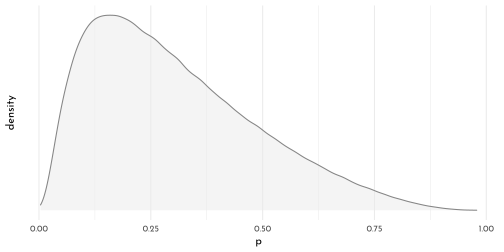
brms_c13_model_names <- brm(
data = data_names,
family = binomial,
kept_name | trials(1) ~ 1 +
(1 | age_group) +
(1 | decade_married) +
(1 | educ_group) +
(1 | state_name),
prior = c(prior(normal(-1, 1), class = Intercept),
prior(exponential(1), class = sd)),
iter = 2000, warmup = 1000,
chains = 4, cores = 4,
control = list(adapt_delta = .98),
seed = 42,
file = "brms/brms_c13_model_names")
fixef(brms_c13_model_names) %>%
data.frame() %>%
knit_precis()| param | Estimate | Est.Error | Q2.5 | Q97.5 |
|---|---|---|---|---|
| Intercept | -0.74 | 0.63 | -2 | 0.46 |
as_draws_df(brms_c13_model_names) %>%
select(starts_with("sd_")) %>%
set_names(str_c("sigma[", c("age", "decade~married", "education", "state"), "]")) %>%
pivot_longer(everything()) %>%
group_by(name) %>%
median_qi(.width = seq(from = .5, to = .9, by = .1)) %>%
ggplot(aes(x = value, xmin = .lower, xmax = .upper, y = reorder(name, value))) +
geom_interval(aes(alpha = .width), color = clr_dark) +
scale_alpha_continuous("CI width", range = c(.7, .15)) +
scale_y_discrete() +
xlim(0, NA) +
labs(y = NULL, x = NULL)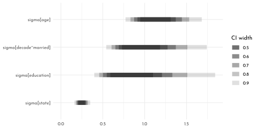
Post-stratify to put the P in MRP
For simplicity, we will only focus on the results for
age_groupandstate. However, we will examine the results for each using three estimation methods: the empirical proportions, the naïve results from the multilevel model, and the MRP estimates.
Estimates by age group
name_levels <- c("raw data", "multilevel", "MRP")
p1 <- data_names %>% # compute the proportions from the data
group_by(age_group, kept_name) %>%
summarise(n = n()) %>%
group_by(age_group) %>%
mutate(prop = n/sum(n),
type = factor("raw data", levels = name_levels)) %>%
filter(kept_name == 1, age_group < 80, age_group > 20) %>%
ggplot(aes(x = prop, y = age_group)) +
geom_point(color = clr0dd, fill = clr0, shape = 21, size = 1.5) +
scale_x_continuous(breaks = c(0, .5, 1), limits = 0:1) +
facet_wrap(~ type)
new_names <- distinct(data_names, age_group) %>% arrange(age_group)
p2 <- fitted(brms_c13_model_names,
re_formula = ~ (1 | age_group),
newdata = new_names) %>%
as_tibble() %>%
bind_cols(new_names, .) %>%
mutate(prop = Estimate,
type = factor("multilevel", levels = name_levels)) %>%
ggplot(aes(x = prop, xmin = Q2.5, xmax = Q97.5, y = age_group)) +
geom_linerange(color = clr0dd, size = .5) +
geom_point(color = clr0dd,
size = 1.5, fill = clr0, shape = 21) +
scale_x_continuous(breaks = c(0, .5, 1), limits = c(0, 1)) +
# scale_y_discrete(labels = NULL) +
facet_wrap(~ type) +
labs(y = NULL)
age_prop <- data_cell_counts %>%
group_by(age_group) %>%
mutate(prop = n / sum(n)) %>%
ungroup()
names_predicted <- add_predicted_draws(brms_c13_model_names,
newdata = age_prop %>%
filter(age_group > 20,
age_group < 80,
decade_married > 1969),
allow_new_levels = TRUE)Next comes the MRP magic. If we group the results by
age_groupand.draw, we can sum the product of the posterior predictions and the weights, which will leave us with 4,000 stratified posterior draws for each of the 11 levels ofage_group. This is the essence of the post-stratification equation McElreath presented in Section 13.5.3,\[\frac{\sum_{i}N_{i}p_{i}}{\sum_{i}N_{i}}\]
We will follow Alexander and call these summary values
kept_name_predict. We then complete the project by grouping by age_group and summarizing each stratified posterior predictive distribution by its mean and 95% interval.
names_predicted <- names_predicted %>%
group_by(age_group, .draw) %>%
summarise(kept_name_predict = sum(.prediction * prop)) %>%
group_by(age_group) %>%
mean_qi(kept_name_predict)
p3 <- names_predicted %>%
mutate(type = factor("MRP", levels = name_levels)) %>%
ggplot(aes(x = kept_name_predict, xmin = .lower, xmax = .upper, y = age_group)) +
geom_linerange(color = clr_current, size = .5) +
geom_point(color = clr_current, fill = clr_lighten(clr_current),
size = 1.5, shape = 21) +
scale_x_continuous(breaks = c(0, .5, 1), limits = 0:1) +
facet_wrap(~ type) +
labs(y = NULL)
p1 + p2 + p3 +
plot_annotation(title = "Proportion of women keeping name after marriage, by age",
subtitle = "Proportions are on the x-axis and age groups are on the y-axis.")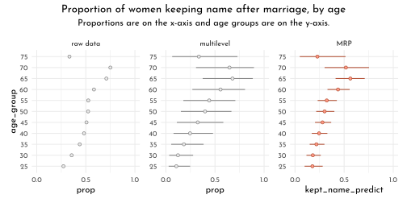
Both multilevel and MRP estimates tended to be a little lower than the raw proportions, particularly for women in the younger age groups. Alexander mused this was “likely due to the fact that the survey has an over-sample of highly educated women, who are more likely to keep their name.” The MRP estimates were more precise than the multilevel predictions, which averaged across the grouping variables other than age. All three estimates show something of an inverted U-shape curve across age, which Alexander noted “is consistent with past observations that there was a peak in name retention in the 80s and 90s.”
Estimates by US state
Now we turn out attention to variation across states. The workflow, here, will only deviate slightly from what we just did. This time, of course, we will be grouping the estimates by
state_nameinstead of byage_group.
library(sf)
us_sf <- read_sf("~/work/geo_store/USA/usa_states_albers_revised.gpkg") %>%
mutate(statename = str_to_title(name))
p1 <- data_names %>%
group_by(state_name, kept_name) %>%
summarise(n = n()) %>%
group_by(state_name) %>%
mutate(prop = n/sum(n)) %>%
filter(kept_name == 1,
state_name != "puerto rico") %>%
mutate(type = factor("raw data", levels = name_levels),
statename = str_to_title(state_name)) %>%
left_join(us_sf,.) %>%
ggplot(aes(color = prop))
# +
# geom_sf(aes(fill = after_scale(clr_alpha(color,.8)))) +
# scale_color_viridis_c("proportion\nkeeping\nname", option = "B", limits = c(0, 0.8)) +
# theme(legend.position = "none") +
# facet_wrap(~ type)
new_names_state <- distinct(data_names, state_name)
p2 <- fitted(brms_c13_model_names,
re_formula = ~ (1 | state_name),
newdata = new_names_state) %>%
as_tibble() %>%
bind_cols(new_names_state,.) %>%
filter(state_name != "puerto rico") %>%
mutate(prop = Estimate,
type = factor("multilevel", levels = name_levels),
statename = str_to_title(state_name)) %>%
left_join(us_sf,.) %>%
ggplot(aes(color = prop))
state_prop <- data_cell_counts %>%
group_by(state_name) %>%
mutate(prop = n/sum(n)) %>%
ungroup()
p3 <- add_predicted_draws(brms_c13_model_names,
newdata = state_prop %>%
filter(age_group > 20,
age_group < 80,
decade_married > 1969),
allow_new_levels = TRUE) %>%
group_by(state_name, .draw) %>%
summarise(kept_name_predict = sum(.prediction * prop)) %>%
group_by(state_name) %>%
mean_qi(kept_name_predict) %>%
mutate(prop = kept_name_predict,
type = factor("MRP", levels = name_levels),
statename = str_to_title(state_name)) %>%
left_join(us_sf,.) %>%
ggplot(aes(color = prop))
p1 + p2 + p3 +
plot_annotation(title = "Proportion off Women Keeping Name after Marriage, by State",
theme = theme(plot.margin = margin(0.2, 0, 0.01, 0, "cm"))) +
plot_layout(guides = "collect", nrow = 1) &
geom_sf(aes(fill = after_scale(clr_alpha(color,.8)))) &
# scale_color_viridis_c("proportion keeping name", option = "B", limits = c(0, 0.8)) &
scale_color_gradientn("proportion keeping name",
colours = c(clr_dark, clr0, clr_saturate(clr_current, .3)),
limits = c(0, 0.8)) &
guides(color = guide_colorbar(title.position = "top",
barheight = unit(5, "pt"),
barwidth = unit(.9, "npc"))) &
theme(legend.position = "bottom") &
facet_wrap(~ type) 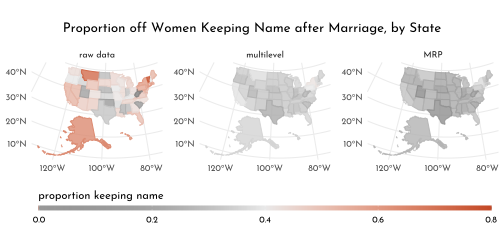
Remember how small the posterior for \(\sigma_{state}\) was relative to the other \(\sigma_{<group>}\) posteriors? We said that would imply more aggressive regularization across states. You can really see that regularization in the panels showing the multilevel and MRP estimates. They are much more uniform than the proportions from the raw data, which are all over the place. This is why you use multilevel models and/or stratify. When you divide the responses up at the state level, the proportions get jerked all around due to small and unrepresentative samples. Even with the regularization from the multilevel partial pooling, you can still see some interesting differences in the multilevel and MRP panels. Both suggest women keep their maiden names in relatively low proportions in Utah and relatively high proportions in New York. For those acquainted with American culture, this shouldn’t be a great surprise.